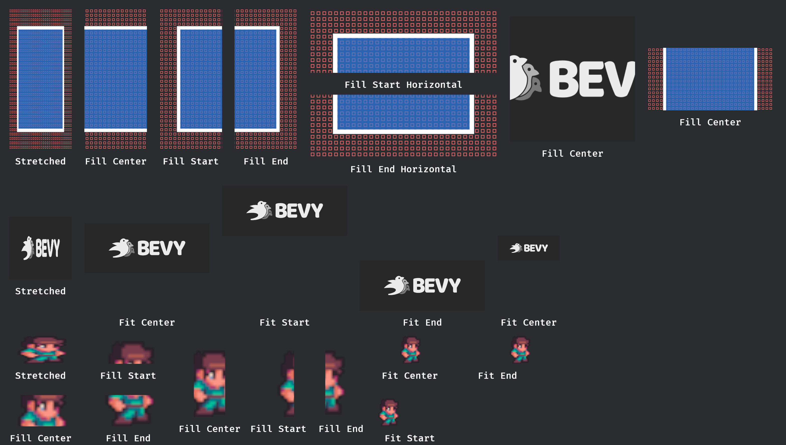
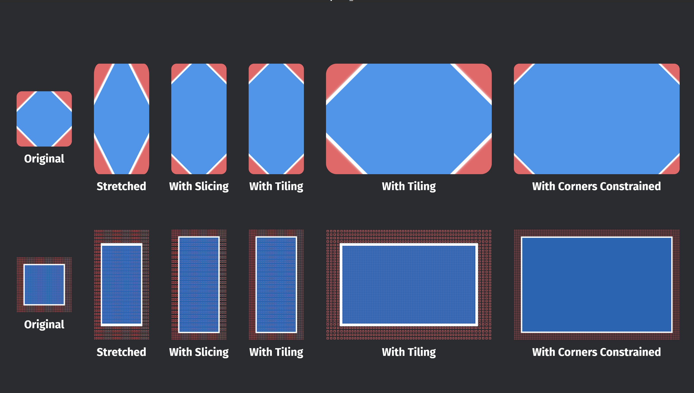
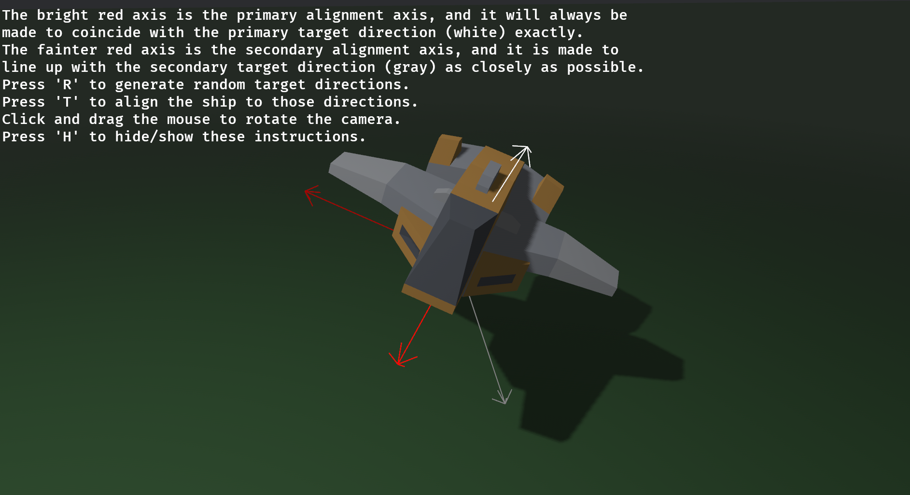
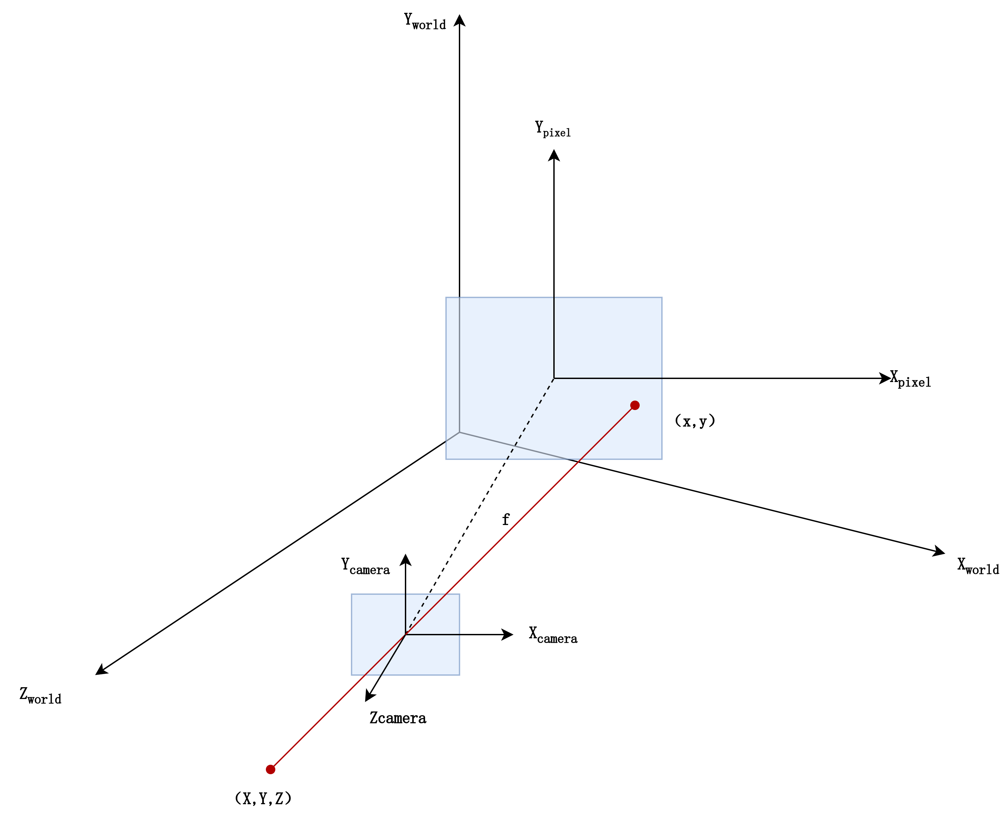

序言
0.1编写本书的意图
由于有关Bevy的系统的、完整的指南书到目前为止仍然欠缺，互联网上的许多指南和总结过于零散，关于Bevy的深入开发常常需要自行理解源码并查阅大量的Bevy文档，这消耗了程序员大量的时间且效率低下严重阻碍了Bevy生态的发展。Bevy经过5年的发展，距离真正的1.0版本完成度已接近8成，是时候撰写一本完善的指南来帮助程序员们快速理解Bevy的系统组成了。
本书的撰写目标是那些已经能够初步掌握Rust语言以及基本线性代数但之前从未接触过游戏开发与计算机图形学的开发者们，本书的章节将从0开始由浅入深介绍Bevy，系统介绍Bevy的架构和Bevy插件的深入的开发，虽然不会对Bevy进行面面俱到的介绍，但是也足以让读者能够深入了解Bevy的工作流程，即使在未来Bevy发生重大变化时，也能够轻松上手。
0.2 Bevy能做什么
Bevy作为Rust生态中最火热几个项目之一，虽然设计初衷是一个游戏引擎，但是在笔者看来，Bevy目前更像是一个3D程序开发应用框架。Bevy目前（撰写本书时候，版本截止到0.17.0）还没有一个场景编辑器，开发中需要在纯代码的层次进行编写，对于游戏开发人员的编程水平和三维想象能力的要求也会更高。笔者目前也不推荐在1.0版本之前就使用其编写一个较为复杂的游戏，但是如果从3D程序开发框架的角度来看待Bevy，那么Bevy已经能够胜任很多事了。
如果你想用Rust而不是C++开发3D程序，那么使用Bevy准没错！
0.3 预备知识
Rust是公认的编程语言中最难掌握的几种之一，但是掌握Rust所带来的回报也是及其丰厚的。由于Bevy使用Rust进行开发，因此读者需要有完善的Rust知识，包括Rust中的并行、异步等。
由于在3D开发中经常需要涉及大量的矩阵变换，因此读者应当具有大学线性代数水平的数学知识，本书中将不会再对线性代数部分进行重复的讲解，这一部分的讲解在互联网上已经足够多了。
在本书的后半部分需要编写自定义渲染管线时，需要使用WGSL语言，该部分将在届时进行简单的介绍，但计算机图形学是一门复杂又庞大的领域，具体的详细介绍与参考请读者参阅WSGL语言的详细介绍。
WSGL语言：https://www.w3.org/TR/2025/CRD-WGSL-20250926/
0.4 参考文献
Bevy examples：https://github.com/bevyengine/bevy
Bevy docx：https://docs.rs/bevy/0.17.1/bevy/
Unofficial Bevy Cheat Book：https://bevy-cheatbook.github.io/overview.html
Bevy game development：https://taintedcoders.com/
bevy_pointcloud：https://github.com/rlamarche/bevy_pointcloud/tree/main
wgpu：https://sotrh.github.io/learn-wgpu/#what-is-wgpu
WebGPU：https://webgpufundamentals.org/webgpu/lessons/webgpu-fundamentals.html
awesome_bevy：https://github.com/nolantait/awesome-bevy
还有互联网上的一切热心的社区贡献者的文章、评论、回答
最后，感谢Bevy社区和互联网上的每一个贡献者和解答者们，没有你们的无私付出Bevy和Rust就无法迎来长足的发展，也就不会有本书。
第 1 章：Bevy 总览
1.1 章节序言
孔明在荆州，与石广元、徐元直、孟公威俱游学，三人务于精熟，而亮独观其大略。 —— 《魏略》
笔者一直认为，学习一件事要由粗入细，由浅入深，因此本章的目标主要是快速让读者对于Bevy能有一个大概的印象，了解Bevy程序的主要组成部分。大量的细节部分我都将略去，因此读者如现在遇到不理解的地方可以不求甚解，后续的章节将会依次仔细展开各个部分进行详细的介绍。
1.2 Hello Bevy!
将Bevy作为一个依赖项，新建一个Rust项目，输入以下代码让我们开始吧
use bevy::prelude::*;
fn main() {
App::new()
.add_systems(Update, hello_world)
.run();
}
fn hello_world() {
println!("hello world");
}上面的这些代码的含义不言而喻，我们实例化了一个App，然后在系统更新时调用hello_world函数，最后运行。使用cargo命令运行这些代码，预想中的游戏窗口和界面并未出现，而是在终端上打印了一条“hello_world“后程序就关闭了，这是怎么回事？
1.2.1 窗口与循环
Bevy的设计理念是插件化的，这意味着每一项功能对于Bevy来说都是以插件的形式启用的，因此窗口的显示、游戏的循环逻辑等功能都需要引入插件。在上面的代码中，我们未添加任何插件，只是简单的声明了 App后调用了hello_world函数，因此程序将在终端中打印一条消息，然后立刻退出。
然而，由于窗口和游戏循环的创建和管理几乎是必选项，除非你想让你的应用在无窗口模式下运行。因此Bevy提供了一组默认的插件用来启用这些功能，更改我们的代码如下，再运行一次，窗口就会显示出来了，同时控制台将不断打印“hello_world“。
#![allow(unused)]
fn main() {
App::new()
//加入这行代码
.add_plugins(DefaultPlugins)
.add_systems(Update, hello_world)
.run();
}这行代码都导入了哪些插件？点开DefaultPlugins的定义，可以看到其中包含如下代码，其中就包含了基本的窗口显示、资源加载、渲染、窗口事件、鼠标键盘输入等。感兴趣的读者可以查看详细的文档，这里不再详细展开。
#![allow(unused)]
fn main() {
#[cfg(feature = "bevy_window")]
bevy_window:::WindowPlugin,
...
bevy_asset:::AssetPlugin,
#[cfg(feature = "bevy_scene")]
bevy_scene:::ScenePlugin,
#[cfg(feature = "bevy_winit")]
bevy_winit:::WinitPlugin,
#[cfg(feature = "bevy_render")]
bevy_render:::RenderPlugin,
......
}1.2.2 调度系统
前面说到，在系统更新时，调用了我们的hello_world函数，那么什么是更新时呢？这就涉及到了Bevy的调度系统以及Bevy的整个生命周期。
在Bevy中，系统的调度由Schedule执行，Schedule包含了一个函数的集合，将在游戏的不同时间段，利用元数据去执行这些函数。换句话说，Schedule负责执行游戏的开始、循环、结束逻辑，并在合适的时候执行用户或者系统的函数。Bevy应用的调度主要有三部分组成，他们的名称如下表所示。
| 名称 | 作用 |
|---|---|
| Main | 游戏的主世界主要逻辑 |
| Extract | 将游戏数据从主世界转移到渲染世界 |
| Render | 将渲染世界里的数据渲染数据到屏幕上 |
这里提到了主世界与渲染世界，何为主世界？何为渲染世界？
按照传统的渲染流程，系统的工作是顺序的即：更新->渲染->更新->渲染，这样的工作方式导致下一帧的更新需要等待上一帧的渲染结束。

将渲染步骤剥离出来，划分为主世界与渲染世界，并在其中添加Extract同步系统，即可将其变为并行工作的系统提高效率。这便是主世界与渲染世界的由来，这种分离的方式将游戏划分为三部分并分别独立出来，能够使得系统解偶的同时提高并行化。

在游戏的主要逻辑中，我们主要需要关注的就是Main中的逻辑，如果需要进行高级图形处理定制化渲染效果，则需要对Extract和Render过程进行修改。在Main调度中，又分为以下10个步骤，其含义不言而喻，Startup的三个过程在启动中只会执行一次，然后游戏将在一个Update循环中不断运行，之前我们在运行hello_world时所指定的Update就是这里。

在这其中，除了RunFixedMainLoop外，几乎所有的步骤都是不言而喻的，那么RunFixedMainLoop是什么？
一般而言，在游戏逻辑中，存在着两种更新方式：
- 游戏的画面将以某些帧率，在每帧都进行更新
- 游戏的逻辑应该与帧率无关，应该是实际的物理时间
这样的更新方式确保了即使我们的游戏帧率发生变化，其游戏逻辑，例如攻击，闪避等指令的物理的花费时间仍然相同，这是非常重要的，而这个计时的方式，即是RunFixedMainLoop的存在意义。RunFixedMainLoop中同样也有一个类似的FixedPreUpdate、FixedUpdate等环节，但不同的是这些调度中的逻辑是按照一定的时间间隔而执行的，这意味着虽然在每一次游戏循环中都会经历，但是并不一定代表着其中的逻辑将会执行，只有当前后两次的时间间隔达到了设定，其中的逻辑才会再次运行。
因此，我们只应该将游戏的渲染处理部分放入Update中，而应该将游戏的实际逻辑处理部分放入RunFixedMainLoop中。
1.3 实体-组件-系统(ECS模式)
只是让程序不断的打印“hello_world“显然是一件很无聊的事情，让我们试着将程序变得更有意思些吧！将原来的代码修改为以下的代码。
use bevy::prelude::*;
use std::time::{SystemTime, UNIX_EPOCH};
#[derive(Component, Default)]
struct FpsCounter {
frame_count: f64,
current_time: f64,
previous_time: f64,
}
fn main() {
App::new()
.add_plugins(DefaultPlugins)
.add_systems(Startup, setup)
//尝试换成add_systems(FixedUpdate, counter_fps)看看显示的结果有什么不同
.add_systems(Update, counter_fps)
.run();
}
fn setup(mut commands: Commands) {
commands.spawn_empty().insert(FpsCounter::default());
}
fn counter_fps(mut counters: Query<&mut FpsCounter>) {
let mut counter = counters
.single_mut()
.expect("Expected exactly one FpsCounter entity");
if counter.previous_time == 0.0 {
counter.previous_time = counter.current_time;
}
let now = SystemTime::now();
let unix_time_f32 = now.duration_since(UNIX_EPOCH).unwrap().as_secs_f64();
counter.current_time = unix_time_f32;
if counter.current_time - counter.previous_time >= 1.0 {
println!(
"FPS: {}",
counter.frame_count / (counter.current_time - counter.previous_time)
);
counter.frame_count = 0.0;
counter.previous_time = counter.current_time;
} else {
counter.frame_count += 1.0;
}
}乍一看，或许你有些慌乱，Component是什么？Query又是什么？Commands又是什么？但是如果你仔细端详这些代码，你会发现他只是一个简单的手写fps计算器，功能不过是计算帧率并打印到控制台之上。这些简单的代码包含了两个层面，第一个是复习我们的调度系统，第二个则是展示了Entity-Component-System(ECS)模式的使用方式。在我的系统上，当使用Startup时，显示的帧率在128帧左右，而当使用FixedUpdate时，则显示在64帧左右。这说明Bevy的默认游戏帧率要比实际的物理时间快一倍。
1.3.1 Entity、Component、System是什么
在面向对象的程序中，游戏里的实体例如玩家、怪物等，往往被建模为一些类，其中拥有他们的各种成员以及属性，一个面向对象语言中的玩家也许会被建模成如下的代码。
class Player {
public:
Player(...){...}
void move(...) {...}
private:
std::string _name;
float _health;
int _level;
float _position_x = 0;
float _position_y = 0;
};
而在一个ECS系统中，则会将其建模为如下的部分。观察他们，我们可以发现在面向对象中，对象的各种属性对应的就是ECS中的Component，而对象的方法则对应一个有着特殊参数的普通的函数在，这个有着特殊参数的函数，就是ECS模式中的System。
#![allow(unused)]
fn main() {
#[derive(Entity)]
struct Entity(u64)
#[derive(Component)]
struct Name(String)
#[derive(Component)]
struct Health(f32)
#[derive(Component)]
struct Level(u32)
#[derive(Component)]
struct Position{
x:f32,
y:f32
}
fn move(mut Players:Query<&mut Player>){
....//some actions
}
}既然Component和System都能找到对应与对象的部分，那么Entity又是什么呢？**简单来说，Entity只是一个简单的标识符，用于标识唯一的实体。**在大多数时候，不需要关心此值让Bevy为我们自动生成即可。
在大量的参考手册中，都使用数据库的例子与ECS系统进行类比，不过二者在多种层次上的相似性确实令人惊叹。学习过数据库的读者应该知道，在关系数据库的一张表中，每一行是一个记录，而每一列则是一个属性，其中每一行都应当有一个唯一的标识ID。
我们可以将ECS中的Entity想象为一张表的标识ID列，其他的Component作为属性列，二者共同标识了游戏世界中唯一的一个实体和实体的各种数据。不过有些许不同的是，数据库的每张表所拥有的属性列是固定的，而不同实体拥有的属性的数目则不需要一样。
1.3.2 Commands与Query
经过前面的介绍，你现在应该已经大致理解了ECS模式，可是在一开始的的代码中，Commands与Query又是什么呢？
沿用前面数据库的例子，对数据库来说最重要的就是对数据的增删改查询。这些操作从操作的对象层面来说，可以分为表级别和行级别，前者代表我们可以对表进行操作来添加和删除一些数据来改变行的总数，后者代表我们可以对某些行进行属性的修改而不改变行的总数。这些操作对应到ECS系统中，就是Commands与Query。
利用Commands，我们可以在表级别的范围内修改数据，即我们可以在游戏中添加或删除一些实体。在下面的代码中，我们使用spawn_empty()方法创建了一个没有任何属性的实体，然后使用insert()方法往其中添加了一个属性，其值是FpsCounter::default()，由于这些操作过于常用，因此还有一个spawn()的简写方式
#![allow(unused)]
fn main() {
commands.spawn_empty().insert(FpsCounter::default());
//等同于下面这行
commands.spawn((FpsCounter::default(),))
}利用Query，我们可以在行级别的范围内修改数据，即我们可以得到某些实体然后修改他们相关联的组件。下面的代码中，我们使用Query尝试获取主世界中那些拥有FpsCounter组件的实体的FpsCounter的可变引用作为参数，然后在函数中进行修改。
Query类似于一个包含着查询结果的vec，这是因为所能查询到的组件有可能有很多个，若我们断定只有一个，可以使用single_mut()方法将其转换为单一结果。当然，Bevy中也拥有其他更方便的方式来实现这样的目标，但是作为对于ECS模式的第一次粗略介绍，笔者认为还是尽量不应使用各种方便的技巧，重点是让读者认识到ECS模式的工作流程。此外，Query的第二个泛型可以接受With和Without参数，以实现过滤查询，这类似于数据库中Where子句。
#![allow(unused)]
fn main() {
//查询拥有Player组件标识的实体的Health的内容
fn get_players_health(mut health:Query<&mut Health,With<Player>>){....}
}1.4 Resource
在编写程序中，我们往往需要一些全局的单例变量，最典型的应用场景就是游戏的设置功能，Resource就是为此而存在的，每种类型的Resource将以单例的方式存在于游戏世界中，在需要时可以在System中进行修改。
1.4.1 创建Resource
要定义一个资产，我们只需要像定义Component一样即可。
#![allow(unused)]
fn main() {
#[derive(Resource)]
struct Setting{
source:f32
};
}要将此资产加入App所管理的资产中，需要在创建App后调用其insert_resource()方法并将一个单例传递给App。
fn main() {
App::new()
.add_plugins(DefaultPlugins)
.insert_resource(Setting{source:0})
.run();
}或者，为资产实现Default或者FromWorld，即可让Bevy自动创建默认实例。
#![allow(unused)]
fn main() {
//实现Default
#[derive(Resource,Default)]
//指明泛型参数，Bevy会自动创建实例
App.insert_resource::<Setting>()
}除了使用App在创建游戏时插入我们的资产，在游戏运行时我们如何动态的决定是否添加某些资产呢？答案就是使用Commands。
#![allow(unused)]
fn main() {
fn add_score(mut commands: Commands) {
commands.init_resource::<Setting>();
//或者我们也可以在这里删除一些资产
commands.remove_resource::<Setting>();
}
}1.4.2 使用Resource
现在我们插入了自己的资产，之后我们该如何使用呢？只需像使用Query时一样，利用一个特定的类型作为System的参数，Bevy就会为我们进行资产的查询和管理。在这里我们有三种方式获得资产，他们分别获得资产的共享引用Res，可变引用ResMut，还有可选资产Option。
#![allow(unused)]
fn main() {
//获得资产的可变引用以便更改
fn some_system(mut score: ResMut<Score>)
//只获得共享引用
fn some_system(score: Res<Score>)
//如果资产可能尚未创建，那么需要使用Option使之变为可选
fn some_system(mut score: Option<ResMut<Score>>)
}1.4.3 默认Resource
除了我们自己创建的一些资产外，Bevy内存在着一些非常重要的内置全局资产，他们包括游戏经过的时间、键盘或鼠标的状态、网格、材质等，这些信息在游戏中是如此的常用。我们现在只粗略介绍一些，目的在于让读者明白Bevy中是通过Resource来管理这些重要数据的，后续章节中将会继续详细介绍其中使用方法。
#![allow(unused)]
fn main() {
Res<Time> //自应用启动以来的时间，以及上一帧逝去的时间
Res<Events<E>> //用于访问各种引擎事件
Res<Assets<T>> // 用于加载静态资产
Res<Window> //存储主窗口的属性
Res<ButtonInput<B>> //用于查询键盘或者鼠标的状态
}1.5 资产Assets
资产是需要加载到游戏中的资源，通常来自于各种硬盘里的文件，例如图像、模型、材质、字体、音频等等等等。由于这些资源的加载往往需要耗费大量时间，因此Bevy里这些资产的加载往往都是以异步的形式以避免阻塞游戏循环。
在Bevy中，我们可以使用AssetServer从硬盘里加载资产，使用Assets<T>来存储已经加载的各类资产。
1.5.1 AssetServer
AssetServer作为一种全局资源，可以使用之前我们加载资源的方式以Res来获取。默认情况下，加载的资产都相对于项目目录下的assets文件夹，要修改这个默认行为，可以修改BEVY_ASSET_ROOT环境变量来指定加载资产的目录。下面展示了一个常用的加载资产并共享的方式。
首先，我们使用AssetServer加载了一个图像并获得其句柄，然后将其句柄储存在一个全局资源ShareImage上，这样，我们之后便可以通过 Res<ShareImage>来获得其句柄以便进行操作。
#![allow(unused)]
fn main() {
#[derive(Resource)]
struct ShareImage {
handle: Option<Handle<Image>>,
}
fn load_image(asset_server: Res<AssetServer>, mut share_image: ResMut<ShareImage>) {
let image_handle = asset_server.load("test.png");
share_image.handle = Some(image_handle);
}
}上面我们提到了句柄(Handle)，那么什么是句柄呢？简单来说，句柄类似于一个对资产的引用计数指针，但能被克隆为强句柄和弱句柄，当不再存在资产的强句柄时，Bevy能够自动将其回收并销毁以释放内存。所以，为了保证资产的持续存在，必须将句柄存储在一个Resource或者Component中。
由于AssetServer返回的是一个句柄并采取异步的方式加载资源，如果你的逻辑中需要判断资源是否加载完成，不能依靠句柄本身存在与否来判断，要实现此功能，可以使用其身上的get_load_state()方法。
#![allow(unused)]
fn main() {
fn on_asset_event(
mut commands: Commands,
asset_server: Res<AssetServer>,
share_image: Res<ShareImage>,
) {
match asset_server.get_load_state(&share_image.handle) {
Some(LoadState::NotLoaded) => {}
Some(LoadState::Loading) => {}
Some(LoadState::Loaded) => {
//在这里使用handle，这时已经加载完成
}
}
}1.5.2 Assets
前面说到，AssetServer负责加载资源，而Assets<T>负责储存资源，这是什么意思呢？Assets<T> 是一个键值对集合，存储了特定类型 T 的所有实际资产数据。当AssetServer成功加载资源后，将会将真正的数据保存在对应的**Assets<T>** 中，如果你需要获得真正的数据，则需要使用相关的句柄和对应类型的Assets
#![allow(unused)]
fn main() {
fn read_image_data(images: ResMut<Assets<Image>>, share_image: Res<ShareImage>) {
let handle = match &share_image.handle {
None => return,
Some(handle) => handle,
};
if let Some(image) = images.get(handle) {
// 现在你有了image的真正数据，可以读取或者修改
println!("Loaded image size: {:?}", image.size());
}
}
}1.5.3 自定义资产
Bevy支持常见的资产，这些资产不需要任何操作即可使用AssetServer进行加载，但是如果我们的资产是某种Bevy不支持的格式时我们该怎么办？这时我们必须手动编写代码和Bevy进行交互来定义我们的资产类型、资产的加载方法、资产的设置以及加载时可能的错误。
现在，我们想要声明一个能够加载点云las文件的资产，我们应该怎么做呢？如果你不知道las文件是什么，不用担心，那只是一些用二进制格式存储的点的三维坐标和一些属性而已。
首先，让我们定义我们的资产数据应该长什么样子。本质上，那只是一个点的Vec而已，其中每个点都有自己的位置、点的尺寸、以及颜色信息，看起来可能是下面这个样子，注意到我们使用了#[derive(Asset)]来告诉Bevy这是我们的资产。
#![allow(unused)]
fn main() {
//点云资产
#[derive(Asset)]
pub struct PointCloud {
pub points: Vec<PointCloudData>,
}
//实际的点数据
#[repr(C)]
pub struct PointCloudData {
pub position: Vec3,
pub point_size: f32,
pub color: [f32; 4],
}
}接着，让我们定义加载时可能出现的一些错误，我们可以使用thiserror来快速声明这些错误类型。
#![allow(unused)]
fn main() {
use thiserror::Error;
#[derive(Error, Debug)]
pub enum LasLoaderError {
#[error("failed to load file: {0}")]
Io(#[from] std::io::Error),
}
}之后，让我们定义一些资产的加载设置和加载器，并为我们的加载器实现AssetLoader特型，在之前我们介绍过，Bevy中的资产加载是异步的，因此需要使用async声明load方法。这里的代码没什么神奇的，但值得一提的是这里的 Reader读取的是二进制数据，需要使用一个Vec<u8>来作为缓冲区存储这些字节数据。
#![allow(unused)]
fn main() {
//在加载时我们可以额外传递一个配置以便动态的控制加载过程，但是在这里我们不需要这些
pub struct LasLoaderSettings{}
//我们的加载器
pub struct LasLoader {}
impl AssetLoader for LasLoader {
type Asset = PointCloud;
type Settings = LasLoaderSettings;
type Error = LasLoaderError;
async fn load(
&self,
reader: &mut dyn bevy_asset::io::Reader,
_settings: &Self::Settings,
_load_context: &mut LoadContext<'_>,
) -> Result<PointCloud, Self::Error> {
let mut bin_data = Vec::new();
reader.read_to_end(&mut bin_data).await?;
//在这里编写真正加载数据的逻辑
//let points = .....
//然后返回一个资产
Ok(PointCloud { points })
}
}最后，让我们在App中注册这些资产和相应的加载器。
fn main() {
App::new()
.add_plugins(DefaultPlugins)
//通过这两个方法注册相应的加载器和资产类型
.init_asset_loader::<LasLoader>()
.init_asset::<PointCloud>()
.add_systems(Startup, load_pointcloud)
.run();
}
//现在，我们应该能够直接使用这些资产类型了
fn load_pointcloud(
mut commands: Commands,
asset_server: Res<AssetServer>,
){
let point_cloud_handler = asset_server.load::<PointCloud>("pointCloud.las");
}1.6 相机
Camera是一个虚拟的三维场景摄像机，想象一下一个人手持相机在一个三维场景中不断变换位置的过程，在不同的位置和不同的角度，Camera上所呈现的画面也会不同。在游戏中，Camera的各种参数决定了所能够看见的画面是怎样的，但是Camera本身往往是相对于游戏中的各种场景所独立的，Bevy中内置了两种类型的相机：Camera2d和Camera3d，不言而喻，前者用于2D画面的渲染，后者用于3D画面的渲染。
在Bevy中，Camera2d和Camera3d作为两个内置组件直接使用即可，将以下代码替换掉Startup调度中原来的函数，即可在屏幕上绘制一个立方体。虽然我们尚未介绍灯光、变换、材质的具体相关内容，但是你现在也应该能够大致理解这些代码中每一行的作用。
#![allow(unused)]
fn main() {
fn setup(
mut commands: Commands,
mut meshes: ResMut<Assets<Mesh>>,
mut materials: ResMut<Assets<StandardMaterial>>,
) {
// 立方体
commands.spawn((
Mesh3d(meshes.add(Cuboid::new(1.0, 1.0, 1.0))),
MeshMaterial3d(materials.add(Color::srgb_u8(124, 144, 255))),
Transform::from_xyz(0.0, 0.5, 0.0),
));
// 灯光
commands.spawn((
PointLight {
shadows_enabled: true,
..default()
},
Transform::from_xyz(4.0, 8.0, 4.0),
));
// 相机
commands.spawn((
Camera3d::default(),
Transform::from_xyz(-2.5, 4.5, 9.0).looking_at(Vec3::ZERO, Vec3::Y),
));
}
}本小节不会讲解投影变换所需要的矩阵运算和数学知识，仅仅是面向新手的定性的讲解。
1.6.1 投影与坐标系
在计算机图形学中，存在着两种投影方式，正交投影(Orthographic pro)和透视投影(Perspective projection)，他们的示意如下图所示其中Camera2d默认采用正交投影，Camera3d则是透视投影。
正交投影是一种平行投影，读者可以想想将一个三维空间沿着视线轴压扁成二维平面。其重要的特点是投影之后物体的大小能够精确反应在三维空间的大小，但是丧失了物体之间的深度关系，在2D游戏或者工程制图中往往最常用。
透视投影则是根据公线方程来进行投影的，投影后的结果和人眼观察三维空间所得到的结果相同。其重要的特点是符合近大远小的透视特征，图形具备立体感，在3D游戏中是最常用的投影。

说完了投影，我们再来说说Bevy中的坐标系。在Bevy中的世界坐标系是一个空间右手坐标系，且Z轴从屏幕指向外部，Y轴从屏幕底部指向顶部，其原点默认处于屏幕的中心。这说明，对于Camera2d来说，Z轴的大小决定了相机的远近，也决定了画面的大小。而画面则是一副标准的右手平面直角坐标系。
Note
想一想，为何Bevy要采用这样的设计？

1.6.2 渲染
一个相机渲染的目标输出结果在程序中的绝大多数时候是Winodw或者Image。渲染到Winodw上即是将渲染结果渲染到实际窗口上，而渲染到Image则一般是为了保存到本地，或者使用UI库(例如egui)时显示3D画面。
默认状态下，相机的渲染目标是Window，如果要渲染到Image需要先进行一定的配置，这部分将在后面的章节中详细介绍。
1.7 输入
Bevy中的输入分为两类：
- Bevy系统对于某些动作自动发出的事件，例如资产加载完成
- 系统接收到的外部输入，例如键盘鼠标等
在本小节中，我们主要简要介绍来自键盘与鼠标的输入及其窗口事件，Bevy中其他的输入方式将留到后续的章节中进行介绍。
键盘和鼠标在Bevy中统一类型为按钮输入(ButtonInput)，但是查询系统只负责进行查询，按键的状态则需要我们自己来判断，ButtonInput提供了多重方法来对按键的状态进行判断，以下是常用的三种方法。
| 方法 | 描述 |
|---|---|
pressed | 当按键被按下时一直为true |
just_pressed | 按键按下时返回 true，有效时间仅一帧 |
just_released | 按键释放时返回true，有效时间仅一帧 |
1.7.1 键盘
最简单的方式是像使用Resource一样使用ButtonInput对象。指定ButtonInput的中的泛型类型为KeyCode，将会在每一帧进行查询，利用前面所属的just_pressed()方法，即可在每一帧内判断是否按下了某些按键。
#![allow(unused)]
fn main() {
fn jump_system(input: Res<ButtonInput<KeyCode>>) {
//需要在这里进行判断
if input.just_pressed(KeyCode::Space) {
info!("Jump!");
}
}
}如果我们的按键是组合按键怎么办？例如我们需要判断是否同时按下ctrl + shift + a时。这里可以利用一个any_pressed()方法，不言而喻只要组合里的任一按键被按下，那么该方法将会返回true，当然，也有一个all_pressed()方法。
#![allow(unused)]
fn main() {
fn combo_key_system(input: Res<ButtonInput<KeyCode>>) {
//注意这里是pressed，而下面是just_pressed，这保证了我们可以一直按着shift和ctrl
let shift = input.any_pressed([KeyCode::ShiftLeft, KeyCode::ShiftRight]);
let ctrl = input.any_pressed([KeyCode::ControlLeft, KeyCode::ControlRight]);
if ctrl && shift && input.just_pressed(KeyCode::KeyA) {
info!("Special ability activated! (Ctrl + Shift + A)");
}
}
}1.7.2 鼠标
鼠标的按键使用方式完全与键盘相同。但是其泛型类型由KeyCode变为了MouseButton。
#![allow(unused)]
fn main() {
fn shoot_input_system(mouse: Res<ButtonInput<MouseButton>>) {
if mouse.just_pressed(MouseButton::Left) {
info!("Bang! Weapon fired.");
}
}
}看到这里读者可能会有疑问，为何对于鼠标只介绍了按键的判断，鼠标的移动、拖动、滑轮滑动等事件如何进行处理呢？答案很明显，既然已经用事件来形容这些输入，那么自然就要在事件系统中进行处理。
1.8 事件
事件用于多个系统之间的通讯，他可以由某些系统或者Bevy发出，在另一些系统中得到处理。Bevy中有两种类型的事件。
Message用于系统之间的通信Event用户触发立即行为EntityEvent的观察者
1.8.1 Message
Bevy的Message系统组成主要分为三部分，他们三者相互配合一起构成了Bevy的Message系统。为了避免消息队列的无限增长，上一帧的Message将会在下一帧结束时被清除，因此如果你不采取一些另外的措施，就不能将消息留到之后进行处理。
| 名称 | 作用 |
|---|---|
Messages<T> | 一个队列，用于容纳事件的信息，本质上是一个带有一些其他方法的Vec<T>。 |
MessageWriter<T> | 将消息写入Messages<T>中。 |
MessageReader<T> | 从队列中读取事件，同时进行一些额外操作保证不会重复读取同一个事件。 |
在使用Message系统前，必须要先定义我们的消息类型，然后进行消息类型的注册。
#![allow(unused)]
fn main() {
//在这里定义消息
#[derive(Message)]
struct CustomMessage {
//发出事件的实体ID
entity: Entity,
//其他信息
some_infos: f32,
}
//在app中注册消息
App::new()
.add_message::<CustomMessage>();
}之后，便可以在一个System中发出事件，另一个System中处理这些事件。通过这种方式，我们可以将系统之间进行解偶，将功能划分为多个系统并提高系统的复用性。
#![allow(unused)]
fn main() {
fn write_message(
mut messages: MessageWriter<CustomMessage>,
entity_and_transform: Query<Entity, With<SomeCompoents>>,
) {
for entity in entity_and_transform {
// 发送某些信息
//...
messages.write(CustomMessage{
entity,
some_infos,
});
}
}
fn read_message(mut messages: MessageReader<CustomMessage>) {
for message in messages.read() {
//对消息做一些处理
//...
}
}
}1.8.2 Event
除了通信方式的Message，Bevy还有另一套Event模式的事件监听与分发系统。这套基于Event模式的事件系统有Event与EntityEvent两种方式。前者用于全局事件，后者则作用在某个特定的实体上，所以被称为EntityEvent，二者的定义方式均与Message相似。
#![allow(unused)]
fn main() {
#[derive(Event)]
struct ReturnToTitle;
#[derive(EntityEvent)]
struct PlayerKilled {
entity: Entity
}
}要触发这些事件，只需在commands中调用其trigger方法并传入事件对象。
#![allow(unused)]
fn main() {
// 触发一个全局的广播事件
commands.trigger(ReturnToTitle)
// 出发某个特定实体上的事件
commands.trigger(PlayerKilled { entity })
}为了相应这些事件，我们还需要定义一个Observer来监听这些事件。一个Observer只是一个特定的函数，其中需要将On作为第一个参数的类型以表示逻辑当<事件类型>发生时。
对于全局的广播事件， 我们应当在App上进行注册，对于某个特定实体上的事件，则需要在使用commands上调用spawn时注册。
fn on_return_to_title(
event: On<ReturnToTitle>,
) {
//做一些全局的工作
}
fn main() {
//在这里注册全局的观察者
App::new().add_plugins(DefaultPlugins).add_observer(on_respawn);
}#![allow(unused)]
fn main() {
fn on_player_Killed(
event: On<PlayerKilled>,
query: Query<&Player>,
) {
if let Ok(player) = query.get(event.entity) {
//在这里可以处理一些数据
}
}
fn set_up(mut commands: Commands) {
//在这里注册监听器
commands.spawn(Player::default()).observe(on_player_Killed);
}
}关于消息与事件的大体介绍就到这里，你可能想问，什么时候我该使用Message，什么时候又该使用Event呢？
简而言之，Message更适合于频繁被触发，需要解耦系统的场景，而Event则适合于处理单个事件且需要将事件限定在某些实体范围内的场景。此外，Event还能够在组件之间进行冒泡，这在某些场景下可能非常有用，具体的使用方式将在后续章节中仔细介绍。
现在，可以回答我们最初的问题了，如何对鼠标的移动、滑轮滚动等做出响应呢？使用EventReader读取相应的事件类型即可。
#![allow(unused)]
fn main() {
fn mouse_event(
mut cursor_events: EventReader<CursorMoved>,
mut wheel_events: EventReader<MouseWheel>,
) {
for event in cursor_events.read() {
info!("Cursor moved: {:?}", event);
}
for event in wheel_events.read() {
info!("Mouse wheel used: {:?}", event);
}
}
}1.9 UI
GUI的编写是一项繁杂的工作，到目前为止 (0.17.2)利用Bevy自身的UI系统来构建UI都是一件麻烦事。不过，UI系统已经被开发人员们提上日程且重点讨论，相信在不久的将来Bevy将经过一次重大更新并给出一个符合人体工程学的UI系统。
在后面的章节中，我们将使用bevy_egui来构建UI，这是egui的Bevy绑定，egui是一个以简洁易用而出名的立即式UI框架，相信我，不需要太多学习你便能掌握它。
1.10 音频
1.10.1 音频播放
Bevy中播放音频只需要加载资产后使用AudioPlayer和PlaybackSettings即可控制音频的播放。前者用于与系统交互播放音频，后者负责初始化的设置。
#![allow(unused)]
fn main() {
fn play_audio(
asset_server: Res<AssetServer>,
mut commands: Commands,
) {
let audio = asset_server.load("audio.ogg");
//在这里向实体插入AudioPlayer和PlaybackSettings组件
commands.spawn((
AudioPlayer::new(audio),
PlaybackSettings::LOOP,
));
}
}其中，音频的格式必须是Bevy支持的格式之一，即wav，ogg，flac，mp3其中之一，默认情况下Bevy只支持ogg格式音频，若需要读取其他格式音频，需要在toml中启用其功能。
[dependencies]
bevy = { version = "0.17", features = ["mp3"] }
1.10.2 音频控制
我们当然不能简单的只是音频，在大多数情况下我们都需要对音频进行播放控制和进度控制等等。Bevy在音频开始播放后，会在实体上自动插入一个AudioSink组件，利用该组件上暴露的方法，便可以对正在播放的音频进行控制或查询其音频属性进行显示。
该组件包含常用play()、pause()、is_paused()等方法和position等属性，这些方法和属性的作用不言而喻，详细的其他方法可以查看文档。
#![allow(unused)]
fn main() {
#[derive(Component)]
struct MyMusic;
//在setup中
commands.spawn((
AudioPlayer::new(asset_server.load("sounds.ogg")),
MyMusic,
));
//在一个system中获得AudioSink来操控音频
fn update_progress(
music_controller: Single<&AudioSink, With<MyMusic>>,
) {
println!("Progress: {}s", music_controller.position().as_secs_f32());
}
}1.11 插件
在最初，我们便讲到“Bevy的设计理念是插件化的”。现在，我们终于来到了这里，什么是插件？怎么构建自己的插件呢？
插件是指任何接受一个App参数，并对其进行修改的函数。这些函数可以对App的行为做出任意更改，甚至可以添加其他插件。通过插件，可以将功能转移到App外的其他部分，使程序的解耦化。
要编写一个自己的插件，我们需要为我们的插件结构体实现 Plugin的build方法，如果我们还需要在build完成后时进行额外的工作，则还可以实现其cleanup方法。
#![allow(unused)]
fn main() {
pub struct CustomPlugin;
impl Plugin for CustomPlugin {
fn cleanup(&self, _app: &App){
//....
}
fn build(&self, app: &mut App) {
//....
}
}
}就是这样！插件本身没什么奇特的，但是在使用和编写的过程中需要谨慎注意插件的使用顺序和关系，不然会导致层次混乱甚至多次调用同一插件，这可能会导致应用崩溃。
1.12 物理引擎
通过前面的介绍你可能已经注意到了，我们的目光一直放在如何显示和操控上，而并没有关心真正的物理效应例如碰撞，重力等，而这些物理效果和交互，则是由物理引擎来进行处理。
物理引擎是一种用于在虚拟环境中模拟现实世界物理现象的核心软件组件。 它负责处理物体间的碰撞检测、动力学模拟、刚体运动、重力、摩擦力、关节约束等物理效果，使得游戏中的物体能够以真实或符合游戏设定的方式相互作用。
Bevy没有官方的物理引擎，其将物理引擎的选择交给了用户，用户可以自由选择rust生态中的一些物理引擎，不过主流的选择是Avian或Rapier，其前者致力于与Bevy进行集成，后者则是与Bevy分离的单独项目。由于Avian其实已经实质上成为了Bevy的首选物理引擎，因此在之后的章节中我们将详细介绍Avian，至于Rapier读者可以自行阅读文档进行学习。
1.13 反射与依赖注入
反射指的是程序在运行时能够访问、检测和修改程序本身状态或行为的一种能力。通过反射，我们可以在程序运行时修改类型的内容并使用字符串进行动态的字段访问。
在Bevy中，广泛使用了一种叫依赖注入的技术，这种技术使我们在编译时能够抹除数据的真实类型而在程序运行时动态的指定数据，其就是利用了反射来实现这样的效果。这也就是为什么虽然我们在编写System时并没有告诉Bevy其参数的个数与类型而仅只是声明在了函数定义中，但是Bevy仍然能够将正确的参数传递给System的原因。
由于Bevy的系统高度依赖反射来实现各种功能，因此当你需要向Bevy中添加自己的类型时候，就必须实现反射才能够让Bevy能够正常工作。
1.14 渲染
Bevy中的渲染是基于wgpu来完成的，wgpu是一个基于WebGPU规范的的Rust实现，其本身是跨平台的，这使得Bevy也能够在不同的平台上进行渲染。对于一般的渲染而言，我们通常不需要接触Bevy的渲染管道，但是当我们需要进行某种高级的图形学渲染效果开发时，则需要在Bevy中编写自己的渲染命令来告诉Bevy如何渲染。
在前面我们说到，Bevy中分为主世界和渲染世界，主世界中的组件通过Extract环节同步到渲染世界进行渲染，如果我们要在Bevy的渲染管线中自定义自己的渲染环节，则必须配置好以下几个部分使Bevy能够使用我们自己的着色器渲染数据。
- 创建一个
ExtractComponent来标识需要渲染的实体并在Extract阶段将其同步到渲染世界，这可以通过一个名为ExtractComponentPlugin的插件来实现自动化同步。 - 在
RenderApp上注册两个Resource作为缓冲区，一个储存了RenderPipeline包含。 - 编写一个或多个渲染逻辑，并实现
RenderCommand特型，获取上一步Resource并结合其他代码决定如何处理数据，将这些逻辑组合成一个元组并在RenderApp上使用add_render_command方法注册。 - 在
RenderApp的Render调度中的Prepare环节调用我们编写的prepare函数来准备渲染所需的数据，在这里定义我们的渲染管线的结构、缓冲区的布局等等。 - 在
RenderApp的Render调度中的Queue环节调用我们编写的queue函数来渲染数据
第 2 章：ECS 架构
2.1 Entity
2.1.1 EntityCommands
在前面我们生成实体时，还记得我们使用了Command.spawn()方法生成了一个没有组件的实体，然后依次往该实体上插入了一些组件，可如何我们想在之后修改实体该怎么办？查看该方法返回的值，可以发现其返回了一个EntityCommands类型的值而不是一个Entity类型的值，如果要获得真正的Entity，我们需要调用EntityCommands上的id方法。
这样设计是因为，单一的Entity几乎没有任何用处，真正有用的是与其相关的EntityCommands，其本质上是一个有关修改实体命令的队列，利用EntityCommands我们可以让我们快速对实体做出一些更改，这些更改大体上分为两类。
- 与实体上的组件相关的方法
- 与其他实体相关的方法
于此同时，Commands上有一个特殊的名为entity的方法，该方法接受一个Entity类型的参数并返回一个EntityCommands类型的值。利用Commands，我们可以通过查询系统获得的Entity来生成EntityCommands。通过这种方式，我们可以实现在游戏运行时对实体而不是组件进行修改，例如添加新的组件或者删除旧的组件等。
#![allow(unused)]
fn main() {
fn change_entity(
mut commands: Commands,
query: Query<Entity, With<Player>>, // 查找所有有 Player 组件的实体
) {
for entity in query.iter() {
let entity_commands = commands.entity(entity);
//在这里可以做实体做出修改
//..
}
}
}2.1.2 Relationship
之前我们一直侧重于实体与其所含有的组件的关系，但是不同的实体之间也会存在着关系，例如一个玩家可能拥有多个宠物、载具等，当玩家死亡时，这些子实体也应该被重置，这种关系被称为实体之间的Relationship。（有意思的是，Relationship并不定义在Entity上而是在他们的Component上）
Bevy为我们预先内置了两种关系：ChildOf和children。前者用于指定当前实体的父实体，后者用于指定当前实体的子实体。通过这样的父子关系，子实体可以继承父实体的一些组件，例如可见性或者全局变换。
要指定当前实体的父实体，需要我们获取父实体的Entity，这可以通过EntityCommands上的id方法获得。随后，我们使用一个内置的ChildOf组件包裹父实体的Entity，然后将其添加到子实体身上。当Bevy识别到ChildOf组件后，将会自动完成之后的工作，通过其中的Entity追踪父实体的生命周期当父实体销毁时自动销毁子实体。
#![allow(unused)]
fn main() {
let player = commands.spawn((Player).id();
commands.spawn((Car, ChildOf(player)));
}要指定当前实体的子实体，可以通过通过EntityCommands上的with_children方法或者children!来实现。此外，EntityCommands还包含了大量与父子关系相关的方法，通过这些方法还可以动态的删除、替换实体之间的父子关系。
#![allow(unused)]
fn main() {
commands
.spawn((Player)
.with_children(|parent| {
parent.spawn((Car,));
});
//也可以使用宏来完成
commands
.spawn((Player),
children![
(Car,),
(Car,),
]);
}除了父子关系外，实体之间还可能有着其他各种各样的关系，因此Bevy还提供了更高级的 API抽象，让我们能够自定义实体之间的关系并决定如何处理这种关系。要自定义关系，我们需要定义关系的relationship与relationship_target，前者作为关系的“源”，后者作为关系的“目标”。这类似于数据库关系中的One-to-Many关系，前者即是关系中的one，后者是关系中的many。
#![allow(unused)]
fn main() {
// 定义一个关系的“源”，一个“源”只能引用一个实体
#[derive(Component, Debug)]
#[relationship(relationship_target = TargetedBy)]
struct Targeting(Entity);
//定义一个关系的“目标”，由于一个目标会有多个相关联的实体，因此这里是Vec<Entity>
//在这里我们启用linked_spawn后，能够让Bevy在target销毁时自动清除其内的关联实体
#[derive(Component, Debug)]
#[relationship_target(relationship = Targeting，linked_spawn)]
struct TargetedBy(Vec<Entity>);
}有了这些，我们便可以通过将其作为组件来使用
#![allow(unused)]
fn main() {
fn spawn_player(mut commands: Commands) {
let player = commands.spawn((Player, Name::new("player_one"))).id();
//使用Targeting代表关系中的“源”
commands.spawn((Car, Targeting(player), Name::new("Lamborghini")));
commands.spawn((Pet, Targeting(player), Name::new("Black")));
}
commands.spawn((
Player,
Name::new("player_one"),
related!(TargetedBy[
// 使用related!宏和TargetedBy直接从关系目标实体上定义关系
(Car, Name::new("Lamborghini")),
(Pet, Name::new("Black")),
]),
));
}回想一下数据库中的基础知识，现在我们能够解决One-to-Many的关系情况了，如何解决Many-to-Many关系的呢？在数据库中，这往往通过新增一个关系表来实现，类比这种方法，在Bevy中我们也可以通过新增一个关系实体。我们可以利用最经典的学生与课程的例子来讲解。
我们将Many-to-Many分解为两个One-to-Many关系，并将其中的两个One组件插入到一个关系实体上，这样我们便可以借助连接实体“顺藤摸瓜”得到对应的学生和课程。
#![allow(unused)]
fn main() {
// 实体 Student
#[derive(Component)] struct Student;
// 实体 Course
#[derive(Component)] struct Course;
// 学生实体上的 Relationship
#[derive(Component)]
#[relationship(relationship_target = StudentEnrollments)]
struct JunctionToStudent(Entity);
// 课程实体上的 Relationship
#[derive(Component)]
#[relationship(relationship_target = CourseEnrollments)]
struct JunctionToCourse(Entity);
// 学生实体上的 RelationshipTarget
#[derive(Component)]
#[relationship_target(relationship = JunctionToStudent)]
struct StudentEnrollments(Vec<Entity>);
// 课程实体上的 RelationshipTarget
#[derive(Component)]
#[relationship_target(relationship = JunctionToCourse)]
struct CourseEnrollments(Vec<Entity>);
let student_a = commands.spawn(Student).id();
let course_math = commands.spawn(Course).id();
// 创建连接实体
commands.spawn((
JunctionToStudent(student_a),
JunctionToCourse(course_math),
));
}2.2 Component
2.2.1 Archetype
实体与组件的关系可以类比成数据库中表，其中每一行代表了world中的某个实体与其相关的组件，每一列代表了其中的组件。然而，这只是我们一厢情愿的类比，这些实体和组件在Bevy中真正的存储方式要比这复杂的多。
Bevy将组件默认存储在Table中，从概念上讲，Table只是一种用于储存数据的数据结构，类似于一个HashMap<ComponentId, Column>，其中每个Column是一个Vec<T:Component>，这意味着其可以方便的查找，但是不方便组件的插入与删除（想象一下，当你向一个Vec中间插入一个新元素的时候，你需要把新位置后的元素全都向后平移一位以腾出位置）。因此，Bevy还提供了一种SparseSet形式的存储数据结构，使用这种稀疏数据结构，可以在需要频繁的插入与删除时提高性能。
#![allow(unused)]
fn main() {
#[derive(Component)]
//如果一个组件可能被频繁插入或者删除，可以标记为稀疏集来优化性能
#[component(storage = "SparseSet")]
struct SomeComponent;
}想象一下在这样的数据结构中我们如何查找一个满足要求的行？必须首先从通过组件的ComponentId获取这一列，然后获取该列中实体的行。当我们需要查找的实体要满足很多条件时，重复进行这样的查找和修改是十分低效的，这是一个不能并行的操作，因为我们不能确定另外一个列位置上是否拥有同样的属性（为什么？）。
为了解决这个问题，Bevy中引入了Archetype。从技术上讲，Archetype是固定组件的组合，这意味着一个Archetype内的实体，其拥有的组件种类是相同的，这使得的Bevy能够通过矢量化操作提高查找或者修改的效率从而提高性能。Bevy在Archetype存储在了一个Table中的引用，这意味着多个Archetype可以共享一张表，但是每个Archetype都只指向一张Table。
作为一个例子，考虑下面的这张Table，当我们查询Player时如果没有Archetype，那么我们必须遍历每个实体才能找到我们最终的结果。
| Entity | Player | Monster | Health | Attack |
|---|---|---|---|---|
| 1 | ✓ | - | 100 | 10 |
| 2 | - | ✓ | 50 | 15 |
| 3 | - | ✓ | 75 | 20 |
| 4 | ✓ | - | 80 | 15 |
现在，我们可以将其分为两个Archetype并引用上面表中的数据。当我们需要找到拥有Player的实体时，我们可以根据原型直接排除第一个Archetype上的所有实体。完美！现在我们的查询系统可以通过Archetype知道那些实体拥有同样的结构以此来对操作进行并行加速了。
| Entity | Monster | Health | Attack |
|---|---|---|---|
| 1 | ✓ | 50 | 15 |
| 2 | ✓ | 75 | 20 |
| Entity | Player | Health | Attack |
|---|---|---|---|
| 1 | ✓ | 100 | 10 |
| 2 | ✓ | 80 | 15 |
尽管这些工作是引擎的幕后工作，但是了解Bevy是如何组织我们的数据是非常重要的，这使得我们能更好的够优化自己的数据组织方式来帮助Bevy更快的运行我们的程序。
2.2.2 Bundle
很多初次学习Bevy的人往往都弄不清楚Bundle和component的关系，从字面意思上来看，Bundle的含义是“一堆，一批”，从实际功用上来看，Bundle是一个容器，容纳了一组component。
还记得我们是如何往实体上插入属性的吗？通过spawn方法，我们传入了一个元组，如果你细心，你能够发现spawn方法接受的参数类型是一个实现了Bundle特型的泛型。由于Bevy为元组类型实现了该特型，因此在这里你不要自己声明Bundle。我们也可以自己声明需要的Bundle，只需要使用Bundle指令即可。
利用Bundle，最直观的便捷就是我们可以快速插入或者删除一组组件。不过，不能在查询中使用Bundle，这是因为查询系统需要访问其中的各个组件类型才能过滤实体。
#![allow(unused)]
fn main() {
commands.spawn((Player,Health::new(100),Attack::new(10)))
//实际上这些代码等同于下面这些
#[derive(Bundle)]
struct PlayerBundle {
player: Player,
health: Health,
attack: Attack
}
//一次性插入多个组件
let player = commands
.spawn_empty()
.insert(PlayerBundle {
player: Player,
health: Health::new(100),
attack: Attack::new(10)
})
.id();
//一次性删除这些组件
commands.entity(player).remove::<PlayerBundle>();
}不过，既然Rust能够正确推断出类型，为什么我们还要自己手动实现需要的Bundle结构体呢？答案是Bundle能够帮我们更好的管理组件的结构帮助我们管理代码和实体。
当一个Bundle的字段里含有另一个Bundle时会发生什么（这是常见的，因为我们这可以复用我们的代码并解耦组件之间的以来）？我们知道所有的组件在Bevy中都是扁平化的，一个组件不可能包含另一个组件。因此Bevy会自动帮我们将其展开。但需要注意的是，不能包含一个Bundle多次，否则Bevy将会崩溃。
#![allow(unused)]
fn main() {
#[derive(Bundle)]
struct BiologyBundle {
health: Health,
attack: Attack
}
#[derive(Bundle)]
struct PlayerBundle {
player: Player,
health_and_attack: BiologyBundle,
}
//当我们拥有以上定义时，Bevy会自动帮我们扁平化PlayerBundle，生成下面的结构
//struct PlayerBundle {
// player: Player,
// health: Health,
// attack: Attack
//}
}2.2.3 require
require属性的组件会使插入一个组件时如果实体身上没有需要的组件时，自动插入其他的组件（必须实现Default或在指令中指定值）。
#![allow(unused)]
fn main() {
#[derive(Component)]
//下面这些方式都可以定义必须组件
#[require(Health, Attack)]
#[require(Health = Health{100},Health = Attack{100}]
struct Player;
//当我们插入Player时，Health和Attack也会被一并插入
let player = commands.spawn(Player).id();
//我们可以获得其身上自动插入的属性
commands.entity(player).get::<Health>().unwrap();
}不过，这种情况也会导致一些类似于面向对象中的“多重继承”的问题，即一个组件通过多个require链产生了同一组件多次。一般来说，我们要避免这种情况的发生，不过当无法避免时，Bevy将遵循以下的初始化顺序。
- 如果
#[require()]中存在明显的构造函数，则优先选择该构造函数。 - 否则，对
require树执行深度优先搜索并选择找到的第一个。
以上的方式通过在编译时生成必须组件，当我们在运行时需要指定必须组件时，可以调用World上的register_required_components或register_required_components_with方法，具体的使用方式可以查询Bevy文档即可，这里不再赘述。
2.2.4 常用组件
Bevy为我们内置了一些常用的组件，这些组件提供了最基础的功能用于控制一些最基本的实体行为，我们将介绍一些常用的基本组件。
Transform是一个最常用的组件之一，用于控制实体的变换，其定义如下，包含最基本的平移、旋转、缩放。值得一提的是，**Transform是实体相对于其父位置的位置，如果没有ChildOf组件，则为参考框架，如果不想受到父实体的影响，可以使用GlobalTransform组件。**这些组件运行在PostUpdate调度中，因此改变后下一帧才会发生变化，不过在多数时候这都是不那么重要的。
#![allow(unused)]
fn main() {
pub struct Transform {
pub translation: Vec3,
pub rotation: Quat,
pub scale: Vec3,
}
}Transform拥有很多方便的工厂函数和方法，这些函数包括from_xyz，from_matrix， from_rotation，looking_at，with_translation等等等等。其作用是不言而喻的，具体的使用方法读者可以查看文档。
Visibility组件用于告诉相机某实体是否可见，其定义如下，该可见性同样会影响到子实体。
#![allow(unused)]
fn main() {
pub enum Visibility {
Inherited,
Hidden,
Visible,
}
}剩余的还有一些相机、灯光等组件，我们将在后续的章节中的合适位置再介绍。
2.3 System
2.3.1 System Order
回想一下在我们注册系统时，我们是将其组合在一个元组之中并调用add_systems方法添加的。但是当存在多个系统时，他们的运行顺序是怎样的呢？答案是：Bevy会努力使他们能够并行运行。
“努力并行”是什么意思呢？Bevy会检查不同系统所需要的参数，当两个系统的参数不存在同一对象的可变引用时，Bevy将会并行执行两个系统。例如我们有一个hello_world和一个hello_bevy系统，二者的作用只是打印两条不同的消息。当我们的程序运行时，并行运行意味着你不会看到二者按照顺序依次不断被打印，打印的结果就像下面这样。
Hello, bevy!
Hello, world!
Hello, world!
Hello, bevy!
Hello, bevy!
Hello, world!
Hello, bevy!
Hello, world!
Hello, world
当二者之间存在某一对象的可变引用时，情况就不同了。例如下面的两个系统，当我们注册之后并在其中使用了commands（由于是惰性的，如果不使用则仍然会并行），Bevy将会发现这两个系统不能够并行调用，因此这两个系统将会按照我们添加时的顺序来调用。
#![allow(unused)]
fn main() {
fn first_system(mut commands: Commands) {
//...
}
fn second_system(mut commands: Commands) {
//...
}
}这很好，因为在这种情况下我们的系统确实不应该被并行。可如果存在两个系统能够并行，但是我们并不希望Bevy这样做时，我们该怎么办呢？Bevy为我们提供了一些便捷的方法来做到这种事，例如before、after、chain，顾名思义，这些方法的作用是指定某些系统和另一些系统的运行先后关系。不过需要注意的是，使用这些方法时只是指定了顺序，你仍然需要把每个系统都注册，程序才能够正常运行。
#![allow(unused)]
fn main() {
//在hello_world运行之前先运行hello_bevy，别忘了注册hello_bevy
add_systems(Update, (hello_world.before(hello_bevy),hello_bevy));
//在hello_bevy之后再运行hello_bevy，别忘了注册hello_world
add_systems(Update, (hello_bevy.after(hello_world),hello_world));
//以hello_bevy，hello_world的方式先后运行，这个方法更方便
add_systems(Update, (hello_bevy,hello_world).chain());
}这些方法在名为IntoScheduleConfigs的特型上，还有一些其他的方便方法，读者可以自己查看相关文档，这里不再赘述。如果你查看过add_systems的签名，你会发现其第二个参数的类型就是实现了这个特型的泛型参数。Bevy为元组、函数等都实现了这个特型，这使得我们能够在函数上调用这些方法（他们本来不存在于这些类型上）。
解决了相互并行的系统之间的顺序，还剩下一个问题：如何串行各个系统，使得系统的处理结果可以从前往后传递，像管道一样运行呢？
既然提到了管道，Bevy也在系统特型为我们提供了一个pipe方法，通过pipe和特殊的In参数，我们可以做到这些。
#![allow(unused)]
fn main() {
// 从这个系统中我们可以返回一些消息传递给下一个系统
fn parse_message_system(message: Res<Message>) -> Result<usize, ParseIntError> {
message.parse::<usize>()
}
// 特殊的In参数类型用于告诉Bevy该参数是从上个系统接收的返回值
fn handler_system(In(result): In<Result<usize, ParseIntError>>) {
match result {
Ok(value) => println!("parsed message: {value}"),
Err(err) => println!("encountered an error: {err:?}"),
}
}
//使用pipe方法，可以将这些系统组合到的一起
parse_message_system.pipe(handler_system)
//还有一种方法可以像使用迭代器一样组合这些系统
parse_message_system.map(|out|{handler_system(out)})
}2.3.2 run_if
很多时候，你可能想要按照某些条件来动态的决定系统是否运行，Bevy为我们提供了run_if方法来做到这件事。
run_if需要一个函数，该函数需要返回一个返回bool类型的闭包，并且该闭包也可以像一个system一样接受各种参数，Bevy将会自动注册这些参数，在游戏的每个循环里，这个闭包将会被运行。当闭包返回true时，系统就会运行。
#![allow(unused)]
fn main() {
//run_if里也可以写如条件，使用and或者or的方式来连接
some_system.run_if(
resource_exists::<InputCounter>.and(
|counter: Res<InputCounter>| counter.is_changed() && !counter.is_added()
)
)
}同时，Bevy也为我们提供了一些常用的判断条件，这些条件函数将在以后的章节中依次介绍，与ECS系统相关的条件函数可以在文档里的Functions部分下找到。
2.3.3 System Set
当我们的系统越来越多时，如何管理和有条件的运行一批系统是至关重要的，例如我们希望用户在游戏中按下某个按键之后只运行系统的UI设置系统来渲染页面，而暂停游戏的逻辑。我们该如何有条件的运行和管理系统呢？Bevy中引入了SystemSet的概念，通过SystemSet我们可以将系统的运行阶段进行划分以更好的分组控制。
要使用SystemSet，首先要定义一个enum类型，派生 SystemSet并继承一系列必需的标准 Rust 特征：
#![allow(unused)]
fn main() {
#[derive(SystemSet, Debug, Clone, PartialEq, Eq, Hash)]
enum MySystemSet {
SetOne,
SetTwo,
}
}之后，我们使用in_set方法来指定系统运行时需要所处的状态，使用App上的configure_sets来设置我们的系统的状态变化顺序，就像下面的代码一样（其中hello_world_from_state_one等系统只是一条打印消息的普通函数）。
fn main() {
App::new()
.add_plugins(DefaultPlugins)
.add_systems(
Update,
(hello_world_from_set_one, hello_bevy_from_set_one)
.chain()
.in_set(MySystemSet::SetOne),
)
.add_systems(
Update,
(hello_world_from_set_two, hello_bevy_from_set_two)
.chain()
.in_set(MySystemSet::SetTwo),
)
// .add_systems(Update, change_Set)
.configure_sets(Update, (MySystemSet::SetTwo, MySystemSet::SetOne).chain())
.run();
}运行这些代码，你可以发现我们的系统以下面的方式循环打印，这是因为我们以chain的方式指定了系统之间的运行顺序，因此总是先打印world再打印Bevy。同时，我们的这行代码(MyState::StateTwo, MyState::StateOne).chain()指定了在Update调度中，系统的状态是先处在StateTwo，然后变换到StateOne。因此in_set(MyState::StateTwo)内的两个系统将先运行，然后才是in_set(MyState::StateOne)的两个系统运行。
Hello, world! From set two
Hello, Bevy! From set two
Hello, world! From set one
Hello, Bevy! From set one
2.3.4 State
有了SystemSet我们可以对系统的运行阶段进行划分和分组，但是如何才能真正做到对系统运行阶段的控制呢？例如我们想要按下ESC键后能够暂停游戏逻辑的系统，而打开UI绘制和设置的系统，我们应该怎么做呢？这就要使用State来控制系统的状态。
在计算机科学中，State是一个非常通用的概念，用于描述系统、物体或者实体在特定时间点或特定情况下的情况、性质或特征。在Bevy中，我们通过切换App的State，再利用State与SystemSet，就能实现我们的需求——动态的控制系统的运行与关闭。
定义状态的步骤没什么特殊的，让编译器为我们实现States与一系列必需的标准 Rust 特征即可。然后，我们需要在App上使用init_state或者insert_state方法注册我们的状态。
#![allow(unused)]
fn main() {
#[derive(Debug, Clone, Eq, PartialEq, Hash, Default, States)]
enum MyState {
#[default]
StateOne,
StateTwo,
}
App::new()
// 添加我们的状态
.init_state::<MyState>()
}之后，我们可以通过创建一个系统来根据需要动态的改变系统的状态，在此系统中，我们可以获得两个特殊的参数：Res<State<MyState>>和 mut next_state: ResMut<NextState<AppState>>，利用前者，我们可以获得当前所处的状态，后者则可以将状态转换为下一状态。
#![allow(unused)]
fn main() {
fn toggle_state(
mut next_state: ResMut<NextState<AppState>>,
current_state: Res<State<AppState>>,
input: Res<ButtonInput<KeyCode>>,
) {
if input.just_pressed(KeyCode::Escape) {
//按键按下时，设置新状态
next_state.set(AppState::MainMenu);
}
}
}现在，我们可以更改一下我们的代码，写出一个简单的按键控制状态系统。注意到我们使用了run_if和in_state来动态的判断并运行不同系统。现在当你按下空格前，程序将只会打印From set one的两条消息，当你按下空格后，程序则只会打印From set two的两条消息。
fn main() {
App::new()
.add_plugins(DefaultPlugins)
.init_state::<MyState>()
.add_systems(
Update,
(hello_world_from_set_one, hello_bevy_from_set_one)
.chain()
.in_set(MySystemSet::SetOne)
//利用run_if方法和state动态判断是否应该执行这些systems
.run_if(in_state(MyState::StateOne)),
)
.add_systems(
Update,
(hello_world_from_set_two, hello_bevy_from_set_two)
.chain()
.in_set(MySystemSet::SetTwo)
//利用run_if方法和state动态判断是否应该执行这些systems
.run_if(in_state(MyState::StateTwo)),
)
.add_systems(Update, change_state)
.configure_sets(Update, (MySystemSet::SetTwo, MySystemSet::SetOne).chain())
.run();
}
fn change_state(
input: Res<ButtonInput<KeyCode>>,
state: Res<State<MyState>>,
mut next_set: ResMut<NextState<MyState>>,
) {
if input.just_pressed(KeyCode::Space) {
//按键按下时检测当前的状态，并更改为另一状态
match state.get() {
MyState::StateOne => next_set.set(MyState::StateTwo),
MyState::StateTwo => next_set.set(MyState::StateOne),
}
}
}
除了使用run_if和in_state的方式，实际上Bevy还提供了OnEnter和OnExit两个特殊的调度器，这种方式类似于守卫模式，在进入和离开某个状态时将会各进入该调度一次。利用这两个调度，我们可以在状态转换时执行一些特定的系统，但是需要注意的是，这个调度只会在转换时调用其中的函数一次，而run_if和in_state不会这样。例如在App上使用下面这些代码，这些函数只会在按下空格键时执行一次。
#![allow(unused)]
fn main() {
add_systems(OnEnter(MyState::StateOne), || {
println!("Entered State One");
})
add_systems(OnEnter(MyState::StateOne), || {
println!("Entered State Two");
})
}2.3.5 SystemParam
在前面定义系统时，我们直接将参数作为系统函数的参数，这样做固然方便，但当系统的参数越来越多时会导致我们的参数越来越多也越来越复杂，如果我们能够将其参数单独定义成一个结构体，那么就能将其分离。
利用指令SystemParam来让Bevy为我们自动实现结构体的SystemParam特型，这样我们就可以将原来的多个参数转移到结构体中，并使用结构体作为我们的参数。不过，当我们这样做时必须指定正确的生命周期，具体的生命周期类型，可以查看文档。
#![allow(unused)]
fn main() {
// 使用指令SystemParam来自动实现SystemParam trait
#[derive(SystemParam)]
struct PlayerCounter<'w, 's> {
players: Query<'w, 's, &'static Player>,
count: ResMut<'w, PlayerCount>,
}
impl<'w, 's> PlayerCounter<'w, 's> {
fn count(&mut self) {
self.count.0 = self.players.iter().len();
}
}
/// 在系统中我们可以直接使用该结构体作为查询参数
fn count_players(mut counter: PlayerCounter) {
counter.count();
println!("{} players in the game", counter.count.0);
}
}有时候，我们在system中不想修改原来的SystemParam，我们只是需要一份副本来执行某些操作，我们该怎么办呢？这时我们可以利用Local来修饰查询，这样bevy会为我们提供一个完整的副本，在副本上进行所有的操作都不会影响查询系统中的SystemParam。
#![allow(unused)]
fn main() {
fn count_players(mut counter: Local<PlayerCounter>) {
//现在counter是一份完整的部分，我们修改这里的counter不会影响其他系统得到的counter
}
}2.4 Query
2.4.1 QueryData
查看Query的定义，可以发现其有两个参数，QueryData和QueryFilter。
QueryData是查询获取的数据类型，将作为查询项返回。只有与请求数据匹配的实体才会生成查询项。
QueryFilter是一组可选条件，用于确定查询项应保留还是丢弃。默认值为unit，表示不会应用其他过滤器。
#![allow(unused)]
fn main() {
pub struct Query<'world, 'state, D, F = ()>where
D: QueryData,
F: QueryFilter,
{ /* private fields */ }
}对于可变和不可变引用的获取，必须在QueryData中指定类型，这是为了使Bevy能够在查询不可变组件时尽可能的并行。另外，这两个泛型参数既可以是单个结构，也可以是一个元组，这意味着我们可以写出这样的代码来一次性查询实体上的多个组件。
#![allow(unused)]
fn main() {
// 获取一个组件的共享引用
fn immutable_query(query: Query<&ComponentA>) {
// ...
}
// 获取一个组件的可变引用
fn mutable_query(query: Query<&mut ComponentA>) {
// ...
}
// 获取同时拥有组件ComponentA和Player的实体上的这两个组件的引用
fn multiple_query(query: Query<(&mut ComponentA,Player)>) {
// ...
}
}Query返回的类型是一个迭代器，如果想要真正修改这些组件，我们就必须遍历其中的内容。除了使用常见的for循环，Query上还提供了很多便利的方法来获取其内容。
#![allow(unused)]
fn main() {
fn multiple_query(query: Query<(&mut ComponentA,Player)>) {
for a,player in &query{
....
}
}
}在很多情况下，我们还需要进行更细力度的查询，类似“最少有一个”、“仅一个”、“0或1个”这样的数量判断，如果不满足这些约束，则跳过我们的系统逻辑。Query类型上有一些方法，能够方便我们判断这些情况。这些方法如下，具体的参数和使用方法读者可查阅文档
| 方法 | 描述 |
|---|---|
iter | 返回所有项目的迭代器 |
for_each | 为每个项目并行运行给定的函数 |
iter_many | 对与实体列表匹配的每个项目运行给定函数 |
iter_combinations | 返回指定数量项目的所有组合的迭代器 |
par_iter | 返回并行迭代器 |
get | 返回给定实体的查询项 |
get_component<T> | 返回给定实体的组件 |
many | 返回给定实体列表的查询项 |
get_single | 安全版本single返回Result<T> |
single | 返回查询项，如果还有其他则会导致panic |
is_empty | 如果查询为空，则返回 true |
contains | 如果查询包含给定实体，则返回 true |
不过，Bevy直接为我们提供了一些Query的变体，能为我们方便的进行这样的查询。这些变体包括：
Single： 恰好有一个匹配的查询项。Option<Single>： 零个或一个匹配的查询项。Populated：至少有一个匹配的查询项。
#![allow(unused)]
fn main() {
// 使用Single时不再需要便利查询
fn hurt_boss(mut boss: Single<&mut Boss>) {
boss.health -= 4.0;
}
// 使用Option时返回的是一个Option
fn hurt_boss(boss: Option<Single<&mut Boss>>) {
match boss{
Some(boss)=>{//...},
None=>{//...}
}
}
// Populated则需要迭代处理
fn hurt_boss(boss: Populated<&mut Boss>) {
for boss in &boss{
//...
}
}
}当简单的组合不能描述我们想要的查询时，Bevy还提供了一些便捷的类型能够使得我们的查询更容易编写。这些类型包括：
| 类型 | 作用 |
|---|---|
Entity | 获得查询得到的实体，实体只是一个数字，不需要引用。 |
Option<F> | 查询可能为None。 |
AnyOf<T> | 指定多个组件，只需要满足这些组件里的任一即可。相当于Option的简便方法。 |
Ref<T> | 获得共享引用，与直接使用&不同的是，这个类型还拥有一些特殊的方法用于检测组件的内容是否发生变化。 |
#![allow(unused)]
fn main() {
// 获得Entity后，我们可以利用command来更改实体上的组件
fn change_entity(mut command:Command,query:Query<(Entity,Player)>){
let entity_commands = commands.entity(entity);
//...
}
// Option相当于查询的“或”运算
fn query_a_or_b(
query: Query<(Option<&A>, Option<&B>)>,
) {
for (a, b) in &query {
if let Some(a) = a {
//...
}
if let Some(b) = b {
//...
}
}
}
// 使用Ref获得组件后，其上拥有一些特殊的方法（is_added、is_changed、changed_by）可以用来在组件改变时执行额外的逻辑
fn change_detect(query: Query<Ref<Player>>) {
for player in &query {
if player.is_added() {
// ...
}
if player.is_changed(){
//...
}
// changed_by仅用于调试，将打印一些有用的信息帮助调试
println(component.changed_by())
}
}
}2.4.2 QueryFilter
在前面，我们只使用了QueryData进行查询，如果你细心，你可以发现在查询时虽然我们指定了一些组件，但是这些组件仅用于标识一些实体，而在实际获得后我们并不需要这些组件，也就是说，这些组件仅用于查询过滤条件。
利用Query的第二个泛型参数QueryFilter，我们可以将其分离开来，其同样支持以元组的形式指定多个条件，并且具有很多的便捷类型能够使得我们的查询更容易编写，这些类型包括：
| 类型 | 含义 |
|---|---|
With<T> | 查询的实体上应该具有组件T |
Without<T> | 查询的实体上不应具有组件T |
Or<T> | 相当于或运算，指定多组过滤条件，满足其中一个即可 |
Changed<T> | 实体必须有该组件，且该组件在这帧中被更改 |
Added<T> | 实体在这帧中添加了该组件 |
我们仅介绍一下Changed类型，此过滤器的常见用途是避免值未改变时的冗余工作。就性能和效果而言，以下的两个系统是大致等价的。
#![allow(unused)]
fn main() {
fn system1(q: Query<&MyComponent, Changed<Transform>>) {
for item in &q { /* component changed */ }
}
fn system2(q: Query<(&MyComponent, Ref<Transform>)>) {
for item in &q {
if item.1.is_changed() { /* component changed */ }
}
}
}2.4.3 自定义查询参数
Bevy虽然有强大的查询系统，不过当查询需要的条件越来越多时就会出现一些不可避免的问题。由于Rust的限制，最多只能存在15个参数，虽然我们可以对元组进行嵌套来解决这个问题，不过如果我们能够定义自己的查询类型，那么我们的代码就能够漂亮的多。该部分内容读者可查看文档，Bevy对此已有详细的说明。
2.5 Resource
在第一章中写到Resource是一个全局单例。用于保存一些在游戏的整个生命周期里都存在的数据，例如游戏设置等。
要创建一个Resource，只需要使用Resource指令即可，然后我们便可以声明一个单例并初始化。
#![allow(unused)]
fn main() {
#[derive(Resource,Default)]
struct Setting{
source:f32
};
//在App中直接初始化，在这里我们实现了Default，因此可以只指定类型
App.insert_resource::<Setting>()
//或者使用commands动态的添加和删除
fn add_score(mut commands: Commands) {
commands.init_resource::<Setting>();
//或者我们也可以在这里删除一些资产
commands.remove_resource::<Setting>();
}
}在使用时，只需要在需要使用的系统上使用Res或者ResMut来指定资源的类型即可。
#![allow(unused)]
fn main() {
//获得资产的可变引用以便更改
fn some_system(mut score: ResMut<Score>)
//只获得共享引用
fn some_system(score: Res<Score>)
//如果资产可能尚未创建，那么需要使用Option使之变为可选
fn some_system(mut score: Option<ResMut<Score>>)
}除了作为一个可以在系统中共享的数据单例，Bevy中许多功能的实现也都是基于Resource来实现的，在前面我们能已经介绍了一部分，这些内容如下。
#![allow(unused)]
fn main() {
Res<Time> //自应用启动以来的时间，以及上一帧逝去的时间
Res<Events<E>> //用于访问各种引擎事件
Res<Assets<T>> // 用于加载静态资产
Res<Window> //存储主窗口的属性
Res<ButtonInput<B>> //用于查询键盘或者鼠标的状态
}run_if可以利用查询系统来结合Resource进行判断，就像下面这样。通过这种方法，可以结合各种Resource来动态的决定系统的运行状态。
#![allow(unused)]
fn main() {
some_system
.run_if(|counter: Res<InputCounter>| counter.is_changed() && !counter.is_added())
}Bevy里还为我们提供了一组与Resource相关的conditions，这些可以在文档里的Functions部分下找到，这些条件包括：resource_added、resource_changed、resource_exists等等等等
2.6 Message
2.6.1 用法回顾
在前面，我们曾简单的介绍过如何使用Message来在多个系统之间进行消息的传递，其最简单的使用方式如下。我们首先使用Message宏定义了消息，然后在App中注册了消息，最后我们使用MessageWriter和MessageReader来进行消息的发送和读取。
#![allow(unused)]
fn main() {
//在这里定义消息
#[derive(Message)]
struct CustomMessage {
//发出事件的实体ID
entity: Entity,
//其他信息
some_infos: f32,
}
//在app中注册消息
App::new()
.add_message::<CustomMessage>();
fn write_message(
mut messages: MessageWriter<CustomMessage>,
entity_and_transform: Query<Entity, With<SomeCompoents>>,
) {
for entity in entity_and_transform {
// 发送某些信息
//...
messages.write(CustomMessage{
entity,
some_infos,
});
}
}
fn read_message(mut messages: MessageReader<CustomMessage>) {
for message in messages.read() {
//对消息做一些处理
//...
}
}
}2.6.2 Message
使用Message宏会自动为结构体实现Message trait。实际的消息是存储在一个Messages资源中，在bevy_ecs中其实定义如下，其包含两个队列用来存储消息，我们写入的消息就是存储在了这两个队列中。
messages_a中存储了上一帧中的消息，messages_b中存储了当前帧插入的消息。
#![allow(unused)]
fn main() {
#[derive(Debug, Resource)]
#[cfg_attr(feature = "bevy_reflect", derive(Reflect), reflect(Resource, Default))]
pub struct Messages<E: Message> {
/// Holds the oldest still active messages.
/// Note that `a.start_message_count + a.len()` should always be equal to `messages_b.start_message_count`.
pub(crate) messages_a: MessageSequence<E>,
/// Holds the newer messages.
pub(crate) messages_b: MessageSequence<E>,
pub(crate) message_count: usize,
}
}2.6.3 MessageWriter
MessageWriter的实现没有什么神奇的，只是一个包含了Messages的SystemParam薄薄的包装。在我们使用的时候，消息会被写入其中的messages内。
#![allow(unused)]
fn main() {
#[derive(SystemParam)]
pub struct MessageWriter<'w, E: Message> {
#[system_param(validation_message = "Message not initialized")]
messages: ResMut<'w, Messages<E>>,
}
}当我们使用MessageWriter写入消息时，会调用messages上的write方法，该方法会将消息写入messages_b这个队列中。MessageWriter还有一些很有用的方法，这些方法包括write_default和write_batch，前者可以写入一个空消息，后者可以批量写入消息。
2.6.3 MessageReader
MessageReader的实现也没有什么神奇的，几乎和MessageWriter相同，消息会在messages内读取。
#![allow(unused)]
fn main() {
#[derive(SystemParam, Debug)]
pub struct MessageReader<'w, 's, E: Message> {
pub(super) reader: Local<'s, MessageCursor<E>>,
#[system_param(validation_message = "Message not initialized")]
messages: Res<'w, Messages<E>>,
}
}读取消息的实现则相对麻烦，这要借助另外几个结构：MessageCursor 、MessageIterator、MessageMutator等等。简而言之，这些结构帮助我们跟踪记录了每一种消息在队列messages_a和messages_b中的位置，当我们读取时将会按照顺序依次读取。
下一帧的时候将messages_a中的消息将被清空，messages_b中的消息将会转移到messages_a中。这也就是为什么如果消息如果在下一帧不读取将会被丢弃的原因。
MessageReader上也有一些很有用的方法，例如is_empty、len等方法可以帮助我们再不读取消息的情况下做出一些决定。
2.7 Event
2.7.1 用法回顾
基于Event模式的事件系统有Event与EntityEvent两种方式，前者用于全局事件，后者则作用在某个特定的实体上，所以被称为EntityEvent。
对于前者，其使用方式如下。首先使用Event宏注册一个事件，然后在App上注册我们的Observer，一个Observer只是一个特定的函数，其中需要将On作为第一个参数的类型以表示逻辑当<事件类型>发生时。当我们需要时可以使用command触发一个全局事件来调用处理函数响应。
#[derive(Event)]
struct ReturnToTitle;
// 触发一个全局的广播事件
commands.trigger(ReturnToTitle)
fn on_return_to_title(
event: On<ReturnToTitle>,
) {
//做一些全局的工作
}
fn main() {
//在这里注册全局的观察者
App::new().add_plugins(DefaultPlugins).add_observer(on_return_to_title);
}对于后者，其基本步骤是相同的，不过我们的Observer这时需要直接绑定到实体上，而且PlayerKilled中要有一个Entity类型的entity字段，用来指定触发的事件是哪个实体。或者，由我们利用#[event_target]手动指定。
值得一提的是，如果我们在App上通过add_observer也注册了一个处理PlayerKilled事件的函数，那么即使我们指定了触发的实体，这个函数也会运行，这是因为其底层使用的是和Event相同的触发器。
#![allow(unused)]
fn main() {
#[derive(EntityEvent)]
struct PlayerKilled {
//一个Entity类型的entity字段作为目标实体
entity: Entity
//手动指定
//#[event_target]
//exploded_entity: Entity,
}
// 触发某个特定实体上的事件
commands.trigger(PlayerKilled { entity })
fn on_player_Killed(
event: On<PlayerKilled>,
query: Query<&Player>,
) {
if let Ok(player) = query.get(event.entity) {
//在这里可以处理一些数据
}
}
fn set_up(mut commands: Commands) {
//在这里注册监听器
commands.spawn(Player::default()).observe(on_player_Killed);
}
}2.7.2 lifecycle
在很多时候，Bevy会自动触发一些事件，这些事件被称为生命周期事件，包括实体上的组件被添加、删除、修改等，如果需要对某些特定的内置事件进行响应，那么可以使用Event，具体的示例如下，其中On的第一个参数是事件的类型，二个参数是具体的Bundle。如果要查看更详细的信息可以查看文档。
#![allow(unused)]
fn main() {
use bevy::prelude::*;
App::new()
// 添加观察器
.add_observer(react_on_removal)
fn react_on_removal(remove: On<Remove, MyComponent>) {
//....
}
}除了上面这种方法，还可以直接在World上对某个组件注册相应的处理函数，这些函数称为生命周期钩子（Hook），就像下面这样。这些钩子可以接受一个HookContext类型的参数，其中包含了发出这个事件的实体，组件的ID等。
#![allow(unused)]
fn main() {
fn setup(world: &mut World) {
world
.register_component_hooks::<MyComponent>()
.on_add(
|mut world,
HookContext {
entity,
component_id,
caller,
..
}| {
//..
},
)
//同样，我们也可以注册on_insert或on_remove等更多的钩子
//.on_insert()
//.on_remove();
}2.7.3 propagate
在介绍Relationship的时候，我们曾讲过，子实体会继承父实体的一些组件。而当子实体和父实体都对同样EntityEvent注册了observer的时候，事件将会以冒泡的形式，先在子实体上触发，然后再交给父实体，而且子实体对事件的信息做出更改后，父实体将得到被修改的事件结构体。
#![allow(unused)]
fn main() {
//假设我们注册了一个父实体和三个子实体
commands
.spawn((Name::new("Goblin"), HitPoints(50)))
.observe(take_damage)
.with_children(|parent| {
parent
.spawn((Name::new("Helmet"), Armor(5)))
.observe(block_attack);
parent
.spawn((Name::new("Socks"), Armor(10)))
.observe(block_attack);
parent
.spawn((Name::new("Shirt"), Armor(15)))
.observe(block_attack);
});
//为子实体注册observer
fn block_attack(mut attack: On<Attack>) {
//对attack可以做出一些更改，例如被成功防御时设置attack.damage = 0;
//或者，我们可以阻止冒泡，调用attack.propagate(false);
}
//为父实体注册observer
fn take_damage(
attack: On<Attack>,
) {
//读取attack做一些处理，这时的attack中的内容是block_attack处理之后的
}
}2.7.4 Event还是Message
之前我们对选择Event还是Message进行过一些简短的讨论，现在我们可以好好的说一下这件事了。
Event的消息处理是即时的、广播的、无序的、冒泡的。这意味着你的Event可以被多个observer同时响应，而且你无法决定他们的响应顺序，而且可以在子实体和父实体之间进行冒泡，这是很有用的。
Message的消息处理是最多延迟一帧的、专一的、有序的、不能冒泡的、有缓冲的。这意味着一般Message的消息只能被读取一次，然后下一帧就会被丢弃，而且多个系统读取到的Message是不一样的，读取的顺序是发出者发出的顺序。
明白了二者的区别，那么当你需要选择的时候就很明显了。如果你的需求和实体关系密切，需要精确的定位到某个特定的实体上并且不关心顺序，需要冒泡处理，那么就是Event，否则就是Message。
2.8 World
World本身其实没有什么要介绍的，但是World的概念却是无处不在的。简而言之，World是一个“舞台”，是一个容纳了所有实体、组件与系统的地方。要能使用ecs系统的内容，必须在World进行操作。因此我们其实可以把代码写成下面这样。
fn main() {
let mut world = World::new();
//world.insert_resource(...)
//world.spwan(...)
//.....
}现在我们可以说，一个App就是对World做了一层包装，我们在App上调用的很多方法，其实是调用的World上的方法。但是，World只提供了这些与ecs相关的方法，没有提供游戏循环、时间管理、插件等等，这些其实是在App上提供的。
2.9 Schedule
一个schedule是一个包含了如何对World进行调度的结构，简而言之，我们的各个游戏阶段，例如Update等，都是一个schedule，因此我们可以把代码写成这样。
fn hello_world() { println!("Hello world!") }
fn main() {
let mut world = World::new();
let mut schedule = Schedule::default();
//我们会将system注册在schedule上
schedule.add_systems(hello_world);
//调用一次run会运行一次schedule上注册过的系统，因此hello_world只会运行一次
schedule.run(&mut world);
}实际上，这些所有的调度，包括下面这张图内的所有阶段，都是在App内注册的，因此我们说，App才是提供游戏循环、时间管理、插件的真正实现之处，单纯的World能实现的内容是相当有限的。
2.10 章节回顾
在这一章里，介绍了整个bevy_ecs crate中的主要内容，该部分是bevy能够运行的基石，同时也提供了强大的功能。利用依赖注入和ecs模式，bevy为我们搭建好了整个游戏的基础框架，使得我们不必再花费精力在状态管理和游戏循环以及并发之中。
阅读完这些内容，你现在应该已经能够看懂bevy储存库下example中的相当多内容了。虽然我们没有对ecs进行全面的细节介绍，但是通过这些介绍，你也应该能够自己自主探索剩下的内容了。仔细阅读example下的ecs示例，你会有新的收获。
Note
其实利用bevy_app、bevy_ecs、bevy_time三个crate，就能实现一个最基本的应用程序框架，有时候这是非常有用的。
例如你想编写一个没有窗口但是又不停运行的系统，但是又不想使用while和状态机来进行麻烦的状态管理，那么使用这三个crate就能解决你的问题。
第 3 章：资产系统
4.1 回顾Asset
资产是需要加载到游戏中的资源，通常来自于各种硬盘里的文件，例如图像、模型、材质、字体、音频等等等等。由于这些资源的加载往往需要耗费大量时间，因此Bevy里这些资产的加载往往都是以异步的形式以避免阻塞游戏循环。在Bevy中，我们可以使用AssetServer从硬盘里加载资产，使用Assets<T>来存储已经加载的各类资产。
与资产相关的内容主要在bevy_asset这个crate中，要使用这些内容，必须在App上调用其中的AssetPlugin这个插件才能访问AssetServer、Assets等类型，这个插件还提供了一些额外的设置，例如指定模式和路径等，该插件已经在DefaultPlugin内，不需要我们再手动安装。
与Asset相关的类型和结构很多，不过大多数时候我们都不需要和他们打交道，如果仅仅是使用，我们只需要和AssetServer还有Assets<T>接触就足够了。
4.1.1 AssetServer
AssetServer作为一种全局资源，可以使用之前我们加载资源的方式以Res来获取。默认情况下，加载的资产都相对于项目目录下的assets文件夹，要修改这个默认行为，可以修改BEVY_ASSET_ROOT环境变量来指定加载资产的目录。
首先，我们使用AssetServer加载了一个图像并获得其句柄，句柄类似于一个对资产的引用计数指针，但能被克隆为强句柄和弱句柄，当不再存在资产的强句柄时，Bevy能够自动将其回收并销毁以释放内存。所以，为了保证资产的持续存在，必须将句柄存储在一个Resource或者Component中。
#![allow(unused)]
fn main() {
#[derive(Resource)]
struct ShareImage {
handle: Option<Handle<Image>>,
}
fn load_image(asset_server: Res<AssetServer>, mut share_image: ResMut<ShareImage>) {
let image_handle = asset_server.load("test.png");
share_image.handle = Some(image_handle);
}
}由于AssetServer返回的是一个句柄并采取异步的方式加载资源，如果你的逻辑中需要判断资源是否加载完成，不能依靠句柄本身存在与否来判断，要实现此功能，可以使用其身上的get_load_state方法或is_loaded_with_dependencies方法，该方法会返回一个LoadState类型的枚举，用来标识加载的阶段。他们的区别将在之后介绍，现在重要的是理解资产的加载是异步的，需要判断是否加载完成才能够使用。
#![allow(unused)]
fn main() {
fn on_asset_event(
mut commands: Commands,
asset_server: Res<AssetServer>,
share_image: Res<ShareImage>,
) {
match asset_server.get_load_state(&share_image.handle) {
Some(LoadState::NotLoaded) => {}
Some(LoadState::Loading) => {}
Some(LoadState::Loaded) => {
//在这里使用handle，这时已经加载完成
}
}
}4.1.2 Assets
Assets<T> 是一个键值对集合，存储了特定类型 T 的所有实际资产数据。当AssetServer成功加载资源后，将会将真正的数据保存在对应的**Assets<T>** 中，如果需要获得真正的数据，则需要使用相关的句柄和对应类型的Assets
#![allow(unused)]
fn main() {
fn read_image_data(images: ResMut<Assets<Image>>, share_image: Res<ShareImage>) {
let handle = match &share_image.handle {
None => return,
Some(handle) => handle,
};
if let Some(image) = images.get(handle) {
// 现在你有了image的真正数据，可以读取或者修改
println!("Loaded image size: {:?}", image.size());
}
}
}4.1.3 自定义资产
如果我们的资产是某种Bevy不支持的格式时，必须手动编写代码和Bevy进行交互来定义我们的资产类型、资产的加载方法、资产的设置以及加载时可能的错误。
假如，我们想要声明一个能够加载点云las文件的资产，那么首先需要定义我们的资产数据应该长什么样子。本质上那只是一个点的Vec而已，其中每个点都有自己的位置、点的尺寸、以及颜色信息，看起来可能是下面这个样子。
注意到我们使用了#[derive(Asset)]来告诉Bevy这是我们的资产。
#![allow(unused)]
fn main() {
//点云资产
#[derive(Asset)]
pub struct PointCloud {
pub points: Vec<PointCloudData>,
}
//实际的点数据
#[repr(C)]
pub struct PointCloudData {
pub position: Vec3,
pub point_size: f32,
pub color: [f32; 4],
}
}接着，让我们定义加载时可能出现的一些错误，我们可以使用thiserror来快速声明这些错误类型。
#![allow(unused)]
fn main() {
use thiserror::Error;
#[derive(Error, Debug)]
pub enum LasLoaderError {
#[error("failed to load file: {0}")]
Io(#[from] std::io::Error),
}
}之后，让我们定义一些资产的加载设置和加载器，并为我们的加载器实现AssetLoader特型，在之前我们介绍过，Bevy中的资产加载是异步的，因此需要使用async声明load方法。这里的代码没什么神奇的，但值得一提的是这里的 Reader读取的是二进制数据，需要使用一个Vec<u8>来作为缓冲区存储这些字节数据。
#![allow(unused)]
fn main() {
//在加载时我们可以额外传递一个配置以便动态的控制加载过程，但是在这里我们不需要这些
pub struct LasLoaderSettings{}
//我们的加载器
pub struct LasLoader {}
impl AssetLoader for LasLoader {
type Asset = PointCloud;
type Settings = LasLoaderSettings;
type Error = LasLoaderError;
async fn load(
&self,
reader: &mut dyn bevy_asset::io::Reader,
_settings: &Self::Settings,
_load_context: &mut LoadContext<'_>,
) -> Result<PointCloud, Self::Error> {
let mut bin_data = Vec::new();
reader.read_to_end(&mut bin_data).await?;
//在这里编写真正加载数据的逻辑
//let points = .....
//然后返回一个资产
Ok(PointCloud { points })
}
}最后，让我们在App中注册这些资产和相应的加载器。
fn main() {
App::new()
.add_plugins(DefaultPlugins)
//通过这两个方法注册相应的加载器和资产类型
.init_asset_loader::<LasLoader>()
.init_asset::<PointCloud>()
.add_systems(Startup, load_pointcloud)
.run();
}
//现在，我们应该能够直接使用这些资产类型了
fn load_pointcloud(
mut commands: Commands,
asset_server: Res<AssetServer>,
){
let point_cloud_handler = asset_server.load::<PointCloud>("pointCloud.las");
}4.2 资产加载流程
在 Bevy 引擎中，AssetReader、AssetLoader、AssetSaver 和 AssetWriter 都是资产系统的重要组成部分，它们各自承担着不同的职责。
4.2.1 AssetLoader
AssetLoader是我们主要用于加载资产的核心类型，在第一章的自定义资产中，我们做了如下几件事情：
- 使用
Asset指令定义一个PointCloud资产 - 定义对应的
LasLoader、LasLoaderError、LasLoaderSettings - 为
LasLoader实现异步的load方法，并从中返回一个Asset
通过这些操作，我们便可以在系统中这样使用我们自定义的加载器以方便的来实现自定义类型的文件加载，并且，我们还可以通过LasLoaderSettings来控制加载的行为。
fn main() {
App::new()
.add_plugins(DefaultPlugins)
//通过这两个方法注册相应的加载器和资产类型
.init_asset_loader::<LasLoader>()
.init_asset::<PointCloud>()
.add_systems(Startup, load_pointcloud)
.run();
}
//现在，我们应该能够直接使用这些资产类型了
fn load_pointcloud(
mut commands: Commands,
asset_server: Res<AssetServer>,
){
//我们不再简单的使用load方法，而是使用load_with_settings方法来指定setting参数
let point_cloud_handler = asset_server.load_with_settings::<PointCloud>(
"pointCloud.las"，
|settings: &mut LasLoaderSettings| {
//我们可以对这个默认对象做一些更改
});
}4.2.2 AssetReader
在为LasLoader实现异步的load方法时，你可能已经注意到了有一个Reader参数，他是一个类型擦除的bevy_asset::io::Reader特型对象，用于异步地将字节数据读取到缓冲区中。而这个特型对象，正是AssetReader的read方法返回的。
#![allow(unused)]
fn main() {
impl AssetLoader for LasLoader {
type Asset = PointCloud;
type Settings = LasLoaderSettings;
type Error = LasLoaderError;
async fn load(
&self,
reader: &mut dyn bevy_asset::io::Reader,
_settings: &Self::Settings,
_load_context: &mut LoadContext<'_>,
) -> Result<PointCloud, Self::Error> {
let mut bin_data = Vec::new();
reader.read_to_end(&mut bin_data).await?;
//在这里编写真正加载数据的逻辑
//let points = .....
//然后返回一个资产
Ok(PointCloud { points })
}
}AssetReader和AssetLoader都用于资产的加载，但是他们负责的层级是完全不同的。AssetReader为不同的平台提供了一个统一的、异步的加载方式，使得我们的游戏能够在每个平台上以相同的方式读取资产；而AssetLoader负责将数据解析成正确的格式，以供程序的正确使用。
大多数情况下，我们可以直接使用内置的AssetReader不需要对其进行自定义，但如果你需要在这个环节进行一些操作，那么Bevy也提供了相应的方法让我们能够重写我们自己的Reader。详细的细节可以查看文档和示例。
4.2.3 AssetSaver与AssetWriter
理解了AssetReader与AssetLoader的关系，我们可以猜到应该还有两个用于保存资产到本地的类型，这些类型就是AssetWriter与AssetSaver，他们的关系是类似的：AssetWriter提供了一个统一的、异步的写入方式，将我们的资产写入到文件系统中，而AssetSaver则负责将数据转换成需要保存的格式。二者的具体使用方法可以查看文档，需要为AssetSaver实现一个save方法，该方法和load非常相似，这里不再赘述。
4.3 资产加载
4.3.1 内嵌资产
有些时候，我们希望将资产打包进入二进制程序中，然后在程序中直接读取这些资产而不是从硬盘里加载。例如，我们可能编写了一些wgsl着色器而又不想将这些代码作为文件存储在磁盘里，这时就需要将其直接内嵌在二进制的程序中，不过我们会需要一些额外的手段来告诉Bevy如何读取这些内嵌的资源。
Bevy中使用宏来嵌入资产到程序中并读取，他们是embedded_asset!宏和load_embedded_asset!宏。
embedded_asset!宏接受两个或三个参数，当接受两个参数的时候，第一个是当前app的可变引用，第二个是需要内嵌的资源的相对于当前目录的路径。假设我们的项目目录如下，我们现在想要将rock.wgsl内嵌到程序中。
bevy_rock
├── src
│ ├── render
│ │ ├── rock.wgsl
│ │ └── mod.rs
│ └── lib.rs
└── Cargo.toml
在render目录下的mod.rs中，我们可以编写一个插件，然后这样使用embedded_asset!宏和load_embedded_asset!宏。当使用宏加载后，文件将会位于一个虚拟的目录下，在这里是embedded://bevy_rock/render/rock.wgsl（注意到src路径已经被删除）。其中前面的embedded被称为AssetSourceId，每一类AssetSourceId都映射着对应的AssetReader和AssetWriter（从程序中之间内嵌的数据读取方式和从磁盘的读取方式不同，所以需要保留这个信息告诉Bevy正确的读取方式）。
我们还可以利用app上的register_asset_source方法注册自己的AssetSourceId，将其绑定到某些文件夹以便在加载资产时通过前戳来快速访问资产，详细的方法可以参考文档。
#![allow(unused)]
fn main() {
//使用两个参数的版本时，第一个参数是app的可变引用，第二个是资产的路径（相对当前目录）
embedded_asset!(app, "rock.wgsl")
//使用三个参数的版本时，第三个参数是资产的路径，第二个参数是需要移除的路径部分
//因此embedded_asset!(app, "rock.wgsl")和embedded_asset!(app, "/src/", "rock.wgsl")是等效的
embedded_asset!(app, "/examples/rock_stuff/", "rock.wgsl")
}然后，我们有两种方式可以加载这个资源。
#![allow(unused)]
fn main() {
//如果在当前的模块中加载，我们可以直接使用load_embedded_asset
let shader = load_embedded_asset!(&asset_server, "rock.wgsl");
//如果在其他模块中，我们可以使用asset_server和路径全称
let shader = asset_server.load::<Shader>("embedded://bevy_rock/render/rock.wgsl");
}在Bevy 0.12之前，你可能会看到名为load_internal_asset!的宏，该宏的作用和上面是一样的，不过目前已经被embedded_asset!取代，因此不建议继续使用。
4.3.2 web资产
另一类比较特殊的资产就是从web上加载的资产，在网络上加载一些内如，我们需要一点额外的支持：引入WebAssetPlugin插件并开启http特征。
use bevy::{asset::io::web::WebAssetPlugin, prelude::*};
fn main() {
App::new()
.add_plugins(DefaultPlugins.set(WebAssetPlugin {
silence_startup_warning: true,
}))
.add_systems(Startup, setup)
.run();
}然后我们就可以像使用普通的文件一样，从web的url里加载这些资产了。
#![allow(unused)]
fn main() {
fn setup(mut commands: Commands, asset_server: Res<AssetServer>) {
commands.spawn(Camera2d);
let url = "https://raw.githubusercontent.com/bevyengine/bevy/refs/heads/main/assets/branding/bevy_bird_dark.png";
commands.spawn(Sprite::from_image(asset_server.load(url)));
}
}4.4 资产事件
资产会在加载的过程中发出一系列Message，如果你需要对这些事件做出一些响应，在bevy中这些事件是一个AssetEvent的枚举类型，可以看到当资产被添加、更改、移除、加载完成时都会发出一些事件，并且在其中保存了对应的资产的ID。
#![allow(unused)]
fn main() {
pub enum AssetEvent<A: Asset> {
Added {
id: AssetId<A>,
},
Modified {
id: AssetId<A>,
},
Removed {
id: AssetId<A>,
},
Unused {
id: AssetId<A>,
},
LoadedWithDependencies {
id: AssetId<A>,
},
}
}要响应这些事件，只需要使用特定的MessageReader即可。
#![allow(unused)]
fn main() {
fn read_message(mut messages: MessageReader<AssetEvent>) {
for message in messages.read() {
//对消息做一些处理
//...
}
}
}第 4 章：时间与定时器
5.1 Timer
一个Timer是一个bevy_time子crate中的类型，代表了bevy中的定时器，通过该类型，我们可以实现计时功能，其主要的两个构造方式如下：
#![allow(unused)]
fn main() {
pub fn new (duration: Duration , mode: TimerMode ) -> Self
pub fn from_seconds (duration: f32 , mode: TimerMode ) -> Self
//其中TimerMode的定义如下
pub enum TimerMode {
Once,
Repeating,
}
}Timer并不关心时间的起点，而更关心时间差，其TimerMode指定了Timer的模式，这个模式的含义如下：
- Once：在经过
Duration时间后，计时器将停止跟踪并保持在完成状态，直到重置为止。 - Repeating：在经过
Duration时间后，计时器不会保持状态，而是可以继续计时，再经过Duration时间后还会触发，并且仍然可以在任何给定点重置。
Timer的用法非常简单，读者可以查看文档，这里只介绍以下几个方法。
#![allow(unused)]
fn main() {
//将计时器的时间往前拨动
//如果拨动的时间大于Timer内的Duration，Once类型的计时器会卡最大的Duration，Repeating类型的计时器不会被影响
pub fn tick (&mut self, delta: Duration ) -> &Self
//计时器从创建，到上一次tick为止，是否已经到达持续时间
pub fn is_finished (&self) -> bool
//仅在上次调用tick方法后，计时器到达Duration的情况下，才返回true
pub fn just_finished (&self) -> bool
}is_finished与just_finished的区别可能有些微妙，这可以通过以下代码来演示。一般而言我们会在Repeating模式下使用just_finished，在Once模式下使用is_finished。
#![allow(unused)]
fn main() {
//Repeating模式下使用just_finished
let mut timer = Timer::from_seconds(1.0, TimerMode::Repeating);
//我们在这里拨动了1.1s的时间，大于1.0秒，因此在这个tick里满足了条件
timer.tick(Duration::from_secs_f32(1.1));
assert_eq!(timer.just_finished(), true);
//我们又在一个新的tick里拨动了0.5s，现在一共是1.6s，还没达到第二个时间点(2s)
//所以下面会返回false
timer.tick(Duration::from_secs_f32(0.5));
assert_eq!(timer.just_finished(), false);
//Once模式下使用is_finished
//在第一次就已经拨到了1.1s,大于1.0s，因此该始时钟停留在1.0s
//所以is_finished的返回值一直都是true
let mut timer = Timer::from_seconds(1.0, TimerMode::Once);
timer.tick(Duration::from_secs_f32(1.1));
assert_eq!(timer.is_finished(), true);
timer.tick(Duration::from_secs_f32(0.5));
assert_eq!(timer.is_finished(), true);
}5.2 Time
Bevy中内置了一些时间信息，其定义如下，这些Time以全局资源的形式存在，通过这些我们可以获得Bevy的时间信息，从而指定时间相关的任务，例如定时运行某些系统等。
#![allow(unused)]
fn main() {
pub struct Time<T: Default = ()> {
context: T,
wrap_period: Duration,
delta: Duration,
delta_secs: f32,
delta_secs_f64: f64,
elapsed: Duration,
elapsed_secs: f32,
elapsed_secs_f64: f64,
elapsed_wrapped: Duration,
elapsed_secs_wrapped: f32,
elapsed_secs_wrapped_f64: f64,
}
}Bevy中存在四种Time，这些时钟是我们在调用DefaultPlugins时内部的 TimePlugin为我们插入的，并且还为我们创建好了更新这些信息的，他们分别是：
- Time
：记录实际经过的时间 - Time
：记录虚拟游戏时间，该时间可以暂停或调整 - Time
：根据虚拟时间跟踪固定时间步长 - Time：一个通用时钟，对应于系统的“当前”或“默认”时间
Bevy是如何做到这些的？简而言之，TimePlugin插件在First调度中（还记得First吗？那是游戏循环的第一个阶段）更新了Time<Real>（使用渲染app传递的时间或者直接调用Instant::now()），然后使用了这个时间来更新了Time和Time<Virtual>。
bevy_time的源码里是这么写的，利用Time<Real>两次更新的时间差来更新Time<Virtual>，然后直接拷贝了一份给Time。这说明其实Time和Time<Virtual>里的时间其实是一样的（除非在FixedMain调度里）。
#![allow(unused)]
fn main() {
pub fn update_virtual_time(current: &mut Time, virt: &mut Time<Virtual>, real: &Time<Real>) {
let raw_delta = real.delta();
virt.advance_with_raw_delta(raw_delta);
*current = virt.as_generic();
}
}在FixedMain调度里，Bevy会更改Time，这是通过调用下面这个特殊的系统来实现的。这个系统利用Time<Virtual>更新了Time<Fixed>，然后在FixedMain阶段里直接修改了Time的时间与Time<Fixed>相同，来让我们在运行FixedMain中的系统时，调用Time看到的时间是Time<Fixed>。最后，当离开这个调度后，我们又将其更正为Time<Virtual>，一切就这样恢复原样，剩下的系统看到的Time不会发生任何改变。
#![allow(unused)]
fn main() {
pub fn run_fixed_main_schedule(world: &mut World) {
let delta = world.resource::<Time<Virtual>>().delta();
world.resource_mut::<Time<Fixed>>().accumulate(delta);
// Run the schedule until we run out of accumulated time
let _ = world.try_schedule_scope(FixedMain, |world, schedule| {
while world.resource_mut::<Time<Fixed>>().expend() {
*world.resource_mut::<Time>() = world.resource::<Time<Fixed>>().as_generic();
schedule.run(world);
}
});
*world.resource_mut::<Time>() = world.resource::<Time<Virtual>>().as_generic();
}
}说了这么多，其实只告诉了我们下面三件事：
在RunFixedMainLoop阶段执行的系统，我们看到的Time是Time<Fixed>。
在Update阶段执行的系统，我们看到的Time是Time<Virtual>。
如果需要获得现实世界的时间，我们则需要使用Time<Real>。
5.3 Time与Timer的配合使用
5.3.1 定时执行系统
很多时候，我们想要创建一个定时任务，利用Timer和Time，我们可以轻轻松松完成这件事，例如下面这样。
#![allow(unused)]
fn main() {
//返回一个闭包，这个闭包会在每次游戏循环里被执行，当返回true时系统将会执行
pub fn on_real_timer(duration: Duration) -> impl FnMut(Res<Time<Real>>) -> bool + Clone {
//创建一个定时器
let mut timer = Timer::new(duration, TimerMode::Repeating);
//闭包获取Time<Real>，并拨动始终，判断是否经过了一段时间
move |time: Res<Time<Real>>| {
timer.tick(time.delta());
timer.just_finished()
}
}
//利用run_if，可以使用这个方法
app.add_system(Update,some_system.run_if(on_real_timer(Durarion::from_sec_32(1.0))))
}我们不需要重复编写这些功能，Bevy在bevy_time中已经为我们提供了一套常用的conditions，读者可以查看文档。
5.3.2 定时执行系统（进阶）
上面的方式只适用于简单的情况，更多时候我们还需要进行一定的控制，这时我们也可以使用上面的方式，但是我们这时候需要利用一个Component来存储Timer并手动利用tick更新时间，就像下面这样。
#![allow(unused)]
fn main() {
#[derive(Component, Deref, DerefMut)]
struct AnimationTimer(Timer);
fn animate_sprite(
time: Res<Time>,
mut query: Query<&mut AnimationTimer>,
) {
for mut timer in &mut query {
timer.tick(time.delta());
if timer.just_finished(){
//执行一些操作
}
}
}
}5.3.3 时间相关的变量
Bevy的示例中充满了这种用法，我们可以获得Time，然后利用Time来更新某些变量。例如我们可以通过delta_secs方法获得每帧相隔的时间，然后乘以系数并不断累加到某个位置，这可以做到让该变量随着时间不断更新的效果。
#![allow(unused)]
fn main() {
fn animate(mut state: ResMut<AnimationState>, time: Res<Time>) {
if state.current >= state.max || state.current <= state.min {
state.speed = -state.speed;
};
state.current += state.speed * time.delta_secs();
}
}第 5 章：2D 渲染
5.1 Mesh2d
在Bevy中，有 Mesh2d与Mesh3d两种，前者是三角形、矩形、圆形等各种二维形状，后者代表立方体、网格模型等三维物体。Mesh2d与Mesh3d可以像一个普通的组件一样使用，就像下面一样。在这些代码里，我们生成了一个实体，并在其之上添加了一个Mesh2d与对应的MeshMaterial2d。同时，别忘了我们还需要指定一个Camera2d来渲染这些内容。
#![allow(unused)]
fn main() {
fn setup(
mut commands: Commands,
mut meshes: ResMut<Assets<Mesh>>,
mut materials: ResMut<Assets<ColorMaterial>>,
) {
commands.spawn(Camera2d);
commands.spawn((
Mesh2d(meshes.add(Rectangle::default())),
MeshMaterial2d(materials.add(Color::from(PURPLE))),
Transform::default().with_scale(Vec3::splat(128.)),
));
}
}Mesh代表由点组成的集合，他们可能是一个模型、一条线段、或者只是一些点，Bevy，而ColorMaterial则代表代表这些形状的颜色、材质等。在Bevy中，二者以Assets的形式存在，当使用时，我们应当使用ResMut获得该资源并向其中添加真正的数据类型。在Assets中我们说过，Bevy加载Assets时将返回一个对应的句柄并在后台加载这些数据，因此，创建Mesh2d与MeshMaterial2d组件时，我们传递的也是一个对应的Handler。
Bevy在bevy_math::primitives中为我们定义好了一组基本的几何形状，这些形状同样在preload中不需要我们再从bevy_math中导入，如上面的Rectangle就是其中的一个形状，这里不再一一赘述，读者可以查看文档详细了解每种形状的创建方式。
5.2 MeshMaterial2d
MeshMaterial2d描述了Bevy应该如何渲染这些形状的具体信息，如果没有MeshMaterial2d只有Mesh2d，那么你会发现窗口上不会渲染任何东西。因此，不详细了解MeshMaterial2d，那么我们就无法掌握如何渲染这些形状。
5.2.1 ColorMaterial
ColorMaterial是一种二维的材质，其结构体的内容如下。可见，通过ColorMaterial我们能够控制的是一个mesh2d的颜色、透明度、uv变换、还有材质，下面我们来详细介绍一些其使用方式。
#![allow(unused)]
fn main() {
pub struct ColorMaterial {
pub color: Color,
pub alpha_mode: AlphaMode2d,
pub uv_transform: Affine2,
#[texture(1)]
#[sampler(2)]
pub texture: Option<Handle<Image>>,
}
}在创建ColorMaterial时，我们可以直接向其传入上面的四个参数。
#![allow(unused)]
fn main() {
let mesh_handle = meshes.add(Rectangle::from_size(Vec2::splat(256.0)));
commands.spawn((
//给Mesh2d传入一个形状的句柄
Mesh2d(mesh_handle),
//给MeshMaterial2d传入一个ColorMaterial的句柄
MeshMaterial2d(materials.add(ColorMaterial {
color: BLUE.into(),
alpha_mode: AlphaMode2d::Opaque,
texture: Some(texture_handle.clone()),
..default()
})),
Transform::from_xyz(-300.0, 0.0, 1.0),
));
}对于第一个参数color而言，Bevy给了我们很多的构造方式，这些方式如下。
#![allow(unused)]
fn main() {
//bevy里有一组内置的常用颜色，可以直接引入他们
use bevy::color::palettes::css::{BLUE, GREEN, WHITE};
//或者，我们自己创建颜色结构体Color并传入
use bevy::prelude::*;
let color = Color::hsl(360. * i as f32 / num_shapes as f32, 0.95, 0.7);
}枚举alpha_mode是一个AlphaMode2d类型，当我们使用图像做为材质时，该值设置对于图像的透明区域该如何处理。其包含三个值Opaque，Mask(f32)，Blend，他们的含义如下。
Opaque：忽略图像的透明通道，使用底色填充（一般为黑色）Mask(f32)：设置一个阈值，类型为f32，当透明度低于这个值时将被渲染为透明，否则被认为完全不透明Blend：透明通道不为1时则为半透明颜色，并且会与下面的其他颜色相混合
#![allow(unused)]
fn main() {
use bevy::sprite_render::AlphaMode2d;
MeshMaterial2d(materials.add(ColorMaterial {
alpha_mode: AlphaMode2d::Opaque,
..default()
})),
}uv_transform要与texture一起使用时才能发挥作用，当我们加载了一个图像并传入时，我们可以通过指定uv_transform来决定图像应该如何与形状对其，这是一个二维的仿射变换。
在加载图像时，若图像大小小于Mesh2d，那么默认情况下，图像将会在左上角开始被放大到能填满区域为止，但是当你指定了uv_transform时，若还不能覆盖整个区域，那么边缘将会被拉伸到填满区域为止；若图像大小大于Mesh2d，那么将只会从图像的左上角开始显示。或者，我们可以指定将图像进行重复显示，这是通过加载图像时指定settings做到的。
ImageSamplerDescriptor里包含了大量的设置，读者可以查看文档详细了解，这里我们只使用其uv参数。
#![allow(unused)]
fn main() {
let image_with_repeated_sampler = asset_server.load_with_settings(
"textures/fantasy_ui_borders/panel-border-010-repeated.png",
|s: &mut _| {
*s = ImageLoaderSettings {
sampler: ImageSampler::Descriptor(ImageSamplerDescriptor {
// 以重复的模式来加载图像
address_mode_u: ImageAddressMode::Repeat,
address_mode_v: ImageAddressMode::Repeat,
..default()
}),
..default()
}
},
);
//使用时，我们需要指定Affine2来决定重复的次数，如果不指定，那么将默认为1，因此区域将铺满一个图像，而且使用临近插值
//因此，这样不会出现线性插值时导致的边缘模糊问题
MeshMaterial2d(materials.add(ColorMaterial {
texture: Some(image_with_repeated_sampler),
// uv_transform used here for proportions only, but it is full Affine2
// that's why you can use rotation and shift also
uv_transform: Affine2::from_scale(Vec2::new(2., 3.)),
..default()
})),
}现在，我们介绍了ColorMaterial的四个重要的参数的使用方法，但是我们仍然缺少一种重要的材质渲染方式，这种方式是GPU最基础的也是功能最强大的，那就是利用顶点属性来渲染颜色。
Mesh结构体上有一个特殊的方法，名叫insert_attribute，利用这个方法，我们可以对Mesh的顶点处插入一些属性，并指定这些属性的类型，当拥有这些属性时，wgpu将会自动工作来将其显示在屏幕上。同样，我们也可以移除这些属性，关于其他更多的方法可以查看相关的文档。
#![allow(unused)]
fn main() {
let mut mesh = Mesh::from(Rectangle::default());
//顶点属性是一组数组
let vertex_colors: Vec<[f32; 4]> = vec![
LinearRgba::RED.to_f32_array(),
LinearRgba::GREEN.to_f32_array(),
LinearRgba::BLUE.to_f32_array(),
LinearRgba::WHITE.to_f32_array(),
];
//利用insert_attribute可以插入这些数组，并指定其类型为Mesh::ATTRIBUTE_COLOR
mesh.insert_attribute(Mesh::ATTRIBUTE_COLOR, vertex_colors);
//现在，我们可以使用这个新的mesh作为Mesh2d
let mesh_handle = meshes.add(mesh);
}5.2.2 自定义材质
与2d相关的内容主要储存在bevy_sprite_render这个crate中，其中包括渲染管道的组成、材质的定义的代码等。我们可以通过实现一个 Material2d特型来创建自己的材质。这涉及到了一些底层的wgpu与图形学内容，因此这一节应该属于渲染管线的内容，但是在这里我们将会简要提一下，感兴趣的读者可以查看文档，或者等到学习自定义着色器时在反过来看这些内容。
5.3 Font
字体是2D显示的另一个方面，在Bevy中，我们可以加载自己的字体并显示。
字体是后戳为ttf的一些文件，包含了文字应该如何在屏幕上绘制的信息，要加载这些字体，就如同加载普通的Aeest一样。
#![allow(unused)]
fn main() {
let font = asset_server.load("fonts/FiraSans-Bold.ttf");
//加载字体之后，我们使用TextFont组件使用它，并指定一些字体的样式，就像使用图片一样
let text_font = TextFont {
font: font.clone(),
font_size: 50.0,
..default()
};
//将这个组件绑定到某个实体上，并指定一些其他的字体组件，便能显示在屏幕上
commands.spawn((
Text2d::new(" translation "),
text_font.clone(),
TextLayout::new_with_justify(text_justification),
TextBackgroundColor(Color::BLACK.with_alpha(0.5)),
Text2dShadow::default(),
));
}在这其中涉及到了大量的字体相关的组件，例如TextLayout，TextBackgroundColor，Text2dShadow，他们的作用不言而喻，通过修改这些组件便可以影响字体的显示效果，读者可以查阅文档来获得详细的信息，这里不再赘述。
5.4 Image
在前面，我们只是简单的使用了一下 asset_server来加载图像，但是我们还没有详细的介绍图像，在介绍Sprite相关的知识之前，有必要在介绍一下与图像相关的加载方式。在之前，我们知道了如何使用asset_server来加载图像，然后利用返回的handle，我们可以进行查询。
#![allow(unused)]
fn main() {
fn read_image_data(images: ResMut<Assets<Image>>, share_image: Res<ShareImage>) {
let handle = match &share_image.handle {
None => return,
Some(handle) => handle,
};
if let Some(image) = images.get(handle) {
//在这里可以使用
}
}
}以下是Image结构体的字段，顾名思义，我们可以通过data来访问原始的图像数据，另外我们还有一些配置项能够修改图像的渲染行为。这些参数的具体含义，读者可以查看文档。这里不再赘述。
#![allow(unused)]
fn main() {
pub struct Image {
pub data: Option<Vec<u8>>,
pub data_order: TextureDataOrder,
pub texture_descriptor: TextureDescriptor<Option<&'static str>, &'static [TextureFormat]>,
pub sampler: ImageSampler,
pub texture_view_descriptor: Option<TextureViewDescriptor<Option<&'static str>>>,
pub asset_usage: RenderAssetUsages,
pub copy_on_resize: bool,
}
}在这里，我们需要重点关注其sampler字段，其表示了当图像被缩放时应该怎么被渲染，默认情况下Bevy将会采取线性插值的方式渲染，这可能会导致我们的图像经过放大之后出现模糊。这时，我们可以更改其为最临近插值，即可解决这个问题。
#![allow(unused)]
fn main() {
image.sampler = ImageSampler::nearest();
}更进一步，不知道读者是否还记得，每一种资产加载时，我们可以传递一个setting选项，Bevy为我们提供了ImageLoaderSettings选项，其中就可以直接指定我们的采样方式。
#![allow(unused)]
fn main() {
//加载图像时的一些可选配置
pub struct ImageLoaderSettings {
pub format: ImageFormatSetting,
pub texture_format: Option<TextureFormat>,
pub is_srgb: bool,
pub sampler: ImageSampler,
pub asset_usage: RenderAssetUsages,
}
let image = asset_server.load_with_settings(
"textures/fantasy_ui_borders/numbered_slices.png",
|settings: &mut ImageLoaderSettings| {
settings.sampler = ImageSampler::nearest();
},
);
}5.5 Sprite
Sprite通常翻译为“精灵”，但其实只是另一种形式的图像，通常用于2D游戏的贴图。由于Sprite只是一种图像，因此最简单的方式就是直接加载一个图像然后生成，这可以通过以下方式来做到，通过这种方式，生成的贴图将会保持图像的原始尺寸，默认情况下，其中心将位于坐标(0,0)处。
#![allow(unused)]
fn main() {
//Sprite包含了非常多的参数，这些参数我们将在后面一一介绍
pub struct Sprite {
//使用的图像的句柄
pub image: Handle<Image>,
//用于渲染的图像集合（多用于精灵的动画）
pub texture_atlas: Option<TextureAtlas>,
//设置颜色，可以用来控制透明度
pub color: Color,
//是否沿着x轴反转精灵
pub flip_x: bool,
//同上，不过是y轴
pub flip_y: bool,
//渲染时选定的尺寸，用于限制精灵的大小
pub custom_size: Option<Vec2>,
//
pub rect: Option<Rect>,
//控制精灵的加载方式，缩放、切片、瓦片重叠等
pub image_mode: SpriteImageMode,
}
//可以直接使用Sprite结构体来加载
commands.spawn(Sprite {
image: asset_server.load("sprites/ball.png"),
..default()
});
//或者，可以使用一个工厂函数
let image_handle = asset_server.load("sprites/ball.png");
let sprite = Sprite::from_image(image_handle);
commands.spawn(sprite);
}让我们先来介绍最重要的image_mode，很多时候我们并不是只想将图像加载，而是以重复的方式或者切片、缩放之后加载，这种方式可以节省我们的内存，通过只保存一份最小纹理，然后在加载时进行处理，我们就可以节省空间。为了做到这件事，我们需要使用image_mode参数，该参数是一个名为SpriteImageMode 的枚举类型，其包含以下四个值。
#![allow(unused)]
fn main() {
pub enum SpriteImageMode {
//默认拉伸图像到能够填满整个区域
Auto,
//将纹理缩放
Scale(SpriteScalingMode),
//将纹理切片
Sliced(TextureSlicer),
//将纹理重复堆叠，stretch_value用于指定每一片相对于图像大小的缩放比
Tiled {
tile_x: bool,
tile_y: bool,
stretch_value: f32,
},
}
}5.5.1 sprite scale
要在加载时对图像进行缩放，我们可以在加载时将其指定为SpriteImageMode::Scale，其类型如下。其中包含了六个类型，这些值都不会改变图像的宽高比，前三个会尽可能放大图像导致图像只有一部分被渲染，后三个保证图像都会被渲染。
#![allow(unused)]
fn main() {
pub enum ScalingMode {
FillCenter,
FillStart,
FillEnd,
FitCenter,
FitStart,
FitEnd,
}
}要使用这些值时，还必须指定Sprite的custom_size字段，因此我们现在可以这样去设定每个精灵的大小了。
#![allow(unused)]
fn main() {
commands.spawn((
Sprite {
image: asset_server.load("textures/slice_square_2.png"),
custom_size: Some(Vec2::new(100., 225.)),
image_mode: SpriteImageMode::Scale(SpriteScalingMode::FillCenter),
..default()
}
));
} 下面是bevy示例sprite_scale中，每种缩放模式的效果。

5.5.2 sprite slice
要在加载时对图像进行切片，我们可以在加载时将其指定为SpriteImageMode::Sliced，其中的TextureSlicer类型如下。sliced是一种九宫格切片技术，关于该技术的详细介绍读者可以查看百科。简而言之，这是一直特殊的缩放技术，能够在缩放时尽可能合理保持图像的纹理。
#![allow(unused)]
fn main() {
pub struct TextureSlicer {
//进行切片时的四条切割线位置
pub border: BorderRect,
//九宫格中心的缩放方式
pub center_scale_mode: SliceScaleMode,
//九宫格四个侧面的缩放方式
pub sides_scale_mode: SliceScaleMode,
//九宫格四个角的最大缩放比例
pub max_corner_scale: f32,
}
pub enum SliceScaleMode {
//以拉伸的方式拉伸图像
Stretch,
//如果要重复绘制，每一小块纹理的缩放值
Tile {
stretch_value: f32,
},
}
//这里的四个值是相对于图像四个边缘的偏移量（分成九宫格需要四条线），而不是绝对坐标
//left指的是距离图像左侧边缘的距离
//right指的是距离图像右侧边缘的距离
pub struct BorderRect {
pub left: f32,
pub right: f32,
pub top: f32,
pub bottom: f32,
}
}同样，我们在使用这种缩放模式的时候，也必须指定尺寸的大小。然后，就可以这样创建不同大小的切片。下图中的效果来自bevy的sprite_slice示例。
#![allow(unused)]
fn main() {
commands.spawn((
Sprite {
image: asset_server.load("textures/slice_square.png"),
custom_size: Some(Vec2::new(300.0, 200.0)),
image_mode: SpriteImageMode::Sliced(TextureSlicer {
border: BorderRect::all(200.0),
center_scale_mode: SliceScaleMode::Tile { stretch_value: 0.1 },
sides_scale_mode: SliceScaleMode::Tile { stretch_value: 0.2 },
max_corner_scale: 0.2,
}),,
..default()
},
));
}
5.5.3 sprite tile
要在加载时对图像进行重复，例如我们可以利用小块纹理进行重复来得到整块区域的北京，我们可以在加载时将其指定为SpriteImageMode::Tiled，相比前两种，这种方式使用起来则轻松得多。
#![allow(unused)]
fn main() {
Tiled {
tile_x: bool,
tile_y: bool,
stretch_value: f32,
},
}我们有三个参数，分别指定了在两个方向上是否要进行重复，最后一个参数和slice中的一样，指定重复时的比例。例如，我们可以这样设定。
#![allow(unused)]
fn main() {
commands.spawn(Sprite {
image: asset_server.load("branding/icon.png"),
image_mode: SpriteImageMode::Tiled {
tile_x: true,
tile_y: true,
stretch_value: 0.5, // The image will tile every 128px
},
..default()
});
}5.5.4 sprite animations
加载完了图像之后，我们还需要给每个角色设定动画，如果只是看到人物单纯的平移那可不是我们想要的。对于2D图像来说，我们最常用的就是下面这种方式，其中每一副图像指定了角色动画的一帧，我们要做的就是不断重复这些图像来产生动画。
要加载这样的精灵，我们需要结合texture_atlas参数来指定动画每一帧的读取方式，该参数的定义如下。
#![allow(unused)]
fn main() {
pub struct TextureAtlas {
//纹理的布局的描述
pub layout: Handle<TextureAtlasLayout>,
//纹理图的索引
pub index: usize,
}
pub struct TextureAtlasLayout {
//整个图像大小
pub size: UVec2,
//图像里每一帧的大小
pub textures: Vec<URect>,
}
}由于TextureAtlasLayout是一种Assets，因此我们还需要将其添加到bevy内置的资产中。
#![allow(unused)]
fn main() {
//这个组件包含一个计时器，用于控制我们的动画播放速度
#[derive(Component, Deref, DerefMut)]
struct AnimationTimer(Timer);
//这个组件用来记录帧数的起始和结束编号
#[derive(Component)]
struct AnimationIndices {
first: usize,
last: usize,
}
fn setup(
mut commands: Commands,
asset_server: Res<AssetServer>,
// 获取TextureAtlasLayout资产
mut texture_atlas_layouts: ResMut<Assets<TextureAtlasLayout>>,
) {
//加载这幅由多帧拼成的图像
let texture = asset_server.load("textures/rpg/chars/gabe/gabe-idle-run.png");
//指定图像的布局，这里指定其为1行7列，每一帧大小为24px，后两个参数是padding和offset，我们不需要指定
let layout = TextureAtlasLayout::from_grid(UVec2::splat(24), 7, 1, None, None);
//将其添加到全局的资产中
let texture_atlas_layout = texture_atlas_layouts.add(layout);
let animation_indices = AnimationIndices { first: 1, last: 6 };
//加载相机
commands.spawn(Camera2d);
//指定精灵和动画
commands.spawn((
Sprite::from_atlas_image(
texture,
TextureAtlas {
layout: texture_atlas_layout,
//指定当前的帧编号
index: 1,
},
),
animation_indices,
Transform::from_scale(Vec3::splat(6.0)),
AnimationTimer(Timer::from_seconds(0.1, TimerMode::Repeating)),
));
}
}现在，我们便可以在一个系统中通过更改组件的texture_atlas上的index，就可以实现帧之间的切换。不过在这里，我们得关心一下帧切换的速度，由于bevy的渲染系统非常快，所以我们必须控制一下切换的速度符合实际，这就要利用我们之前添加的AnimationTimer，其中定义了一个Timer。
#![allow(unused)]
fn main() {
fn animate_sprite(
time: Res<Time>,
mut query: Query<(&AnimationIndices, &mut AnimationTimer, &mut Sprite)>,
) {
for (indices, mut timer, mut sprite) in &mut query {
timer.tick(time.delta());
if timer.just_finished()
&& let Some(atlas) = &mut sprite.texture_atlas
{
atlas.index = if atlas.index == indices.last {
indices.first
} else {
atlas.index + 1
};
}
}
}
}5.5.5 批量加载sprite
想象一下，在一个游戏里我们有巨量的图像都需要加载，在这种情况下这件事很快就会变得很棘手，由于精灵的不同动作的动画可能不在一幅图像里，因此我们必须手动的将这些多副图像组合为一幅。幸运的是，Bevy为我们提供了一种更好的方式来加载这些图像。
首先，我们不再使用asset_server来加载单幅图像，而是使用其load_folder方法来递归地加载整个文件夹下的所有可加载文件，并判断其是否是图像。
#![allow(unused)]
fn main() {
//用于保存句柄的全局资源
#[derive(Resource, Default)]
struct RpgSpriteFolder(Handle<LoadedFolder>);
fn load_textures(mut commands: Commands, asset_server: Res<AssetServer>) {
//在这里我们加载整个文件夹，并保存其句柄
commands.insert_resource(RpgSpriteFolder(asset_server.load_folder("textures/rpg")));
}
}然后，我们还需要某种方式，来观察加载是否已经完成然后调用我们的某个系统来处理，这可以通过系统的state来实现（还记得吗？）
//首先定义我们的state，并指定默认的状态
#[derive(Debug, Clone, Copy, Default, PartialEq, Eq, Hash, States)]
enum AppState {
#[default]
Setup,
Finished,
}
fn main() {
App::new()
.add_plugins(DefaultPlugins.set(ImagePlugin::default_nearest()))
//注册我们的state
.init_state::<AppState>()
//当进入Setup状态时，我们调用load_textures加载整个文件夹下的内容
.add_systems(OnEnter(AppState::Setup), load_textures)
//如果在Setup状态，我们就不停的检查加载是否已经完成
.add_systems(Update, check_textures.run_if(in_state(AppState::Setup)))
//当进入Finished状态时，资源加载完成，我们调用setup函数使用这些资源
.add_systems(OnEnter(AppState::Finished), setup)
.run();
}
fn check_textures(
mut next_state: ResMut<NextState<AppState>>,
rpg_sprite_folder: Res<RpgSpriteFolder>,
mut events: MessageReader<AssetEvent<LoadedFolder>>,
) {
//我们可以通过事件的方式来检查加载是否完成
for event in events.read() {
if event.is_loaded_with_dependencies(&rpg_sprite_folder.0) {
next_state.set(AppState::Finished);
}
}
}
一旦这些步骤完成，我们就可以使用这些资源来加载我们的sprite。
#![allow(unused)]
fn main() {
fn setup(
mut commands: Commands,
rpg_sprite_handles: Res<RpgSpriteFolder>,
asset_server: Res<AssetServer>,
mut texture_atlases: ResMut<Assets<TextureAtlasLayout>>,
loaded_folders: Res<Assets<LoadedFolder>>,
mut textures: ResMut<Assets<Image>>,
) {
//首先获取我们已经加载完成的loaded_folder
let loaded_folder = loaded_folders.get(&rpg_sprite_handles.0).unwrap();
//然后创建sprite
let (texture_atlas_linear, linear_sources, linear_texture) = create_texture_atlas(
loaded_folder,
None,
Some(ImageSampler::linear()),
&mut textures,
);
}
}如何合并多副图像为一个并从中创建单个的TextureAtlas呢？这可以通过TextureAtlasBuilder来实现，TextureAtlasBuilder能够自动将多副图像合并为一副，并返回三个参数：texture_atlas_layout, texture_atlas_sources, texture，他们的类型分别是TextureAtlas，TextureAtlasSources，Handle<Image>。
#![allow(unused)]
fn main() {
fn create_texture_atlas(
folder: &LoadedFolder,
padding: Option<UVec2>,
sampling: Option<ImageSampler>,
textures: &mut ResMut<Assets<Image>>,
) -> (TextureAtlasLayout, TextureAtlasSources, Handle<Image>) {
//创建一个Builder
let mut texture_atlas_builder = TextureAtlasBuilder::default();
//我们可以指定padding来在合并时将图像相隔一段像素
texture_atlas_builder.padding(padding.unwrap_or_default());
//对文件夹里的每一副图像，检查是否为图像并其添加到builder中
for handle in folder.handles.iter() {
let id = handle.id().typed_unchecked::<Image>();
let Some(texture) = textures.get(id) else {
warn!(
"{} did not resolve to an `Image` asset.",
handle.path().unwrap()
);
continue;
};
texture_atlas_builder.add_texture(Some(id), texture);
}
//现在，合并这些图像并生成一整副
let (texture_atlas_layout, texture_atlas_sources, texture) =
texture_atlas_builder.build().unwrap();
//将合并之后的图像添加到全局资产中
let texture = textures.add(texture);
//在这里修改我们的图像采样方式
let image = textures.get_mut(&texture).unwrap();
image.sampler = sampling.unwrap_or_default();
(texture_atlas_layout, texture_atlas_sources, texture)
}
}根据前面的介绍，texture_atlas_layout中记录了合并后整副图像的大小和每一副子图像的矩形范围。但是我们还缺少一个关键信息，我们只知道这幅子图的范围，而不知道这部分子图到底是那副图像。这些信息，就记录在了TextureAtlasSources类型的texture_atlas_sources中，其定义如下，只是一个简单的HashMap而已。如果我们需要使用这些信息的话，便可以通过这两个返回值来获得正确的对应关系。
#![allow(unused)]
fn main() {
pub struct TextureAtlasSources {
pub texture_ids: HashMap<AssetId<Image>, usize>,
}
}第 5.5 章: 空间变换
向量与变换
向量
在线性代数中，我们学习过，如果我们确定了一组线性无关的基，那么三维空间中的某个点坐标，可以使用一个向量来表示。一般而言，我们经常取一组空间相互正交的基，并令他们的模长为1，于是，我们的xyz三个轴的基向量分别表示为:、、。且相互之间两两做点积为0。
对于空间中的一个向量，利用我们的正交基，可以将其表示为即：
一般情况下，我们将其基的三个系数，成为a在该基下的坐标。即的坐标为
旋转
现在，假设我们有两组正交基，它们分别为 （世界空间基）和 （局部空间基）。同一个空间向量 在这两组基下的表示分别为：
于是，我们得到等式：
现在，我们假设第二组正交基（局部基）中的每一个向量，都可以通过第一组基（世界基）的线性组合来表示。即：
将其写成矩阵形式，我们得到了两组正交基的变换公式：
我们将这个中间的 矩阵记为 。将其带入之前的等式：
由于基向量是线性无关的，我们便得到了两组坐标的转换公式：
既然我们已经建立了等式 ，那么反过来，如果我们已知旋转后的向量在世界空间中的表示 ，想要推导它在局部空间（即相对于那组新基 ）的坐标 ，该怎么办？
利用正交基的一个核心性质：向量与基向量的点积即为该向量在该方向上的分量投影。我们将等式两边同时与局部基向量做点积：
将 代入：
同理可得 和 。写成矩阵形式：
观察这个矩阵中的每一个元素。由于我们的基向量均为单位向量（模长为 1），根据点积的定义 ，每一个元素 实际上就是两组基向量之间夹角的余弦值。
因此，这个矩阵被称为方向余弦矩阵。并且，他就是的逆矩阵
现在，我们将这个发现与之前的旋转矩阵 进行对比。你会发现一个极其优美的数学对称性：
- 从局部到世界：矩阵 的列是新基在旧基下的投影。
- 从世界到局部：上面这个投影矩阵的行是新基在旧基下的投影。
这意味着，对于正交旋转矩阵，其逆矩阵等于其转置矩阵（，这是一个很重要的性质！）。
小结：不管是如何进行旋转变换，我们总要找出一个旋转矩阵，然后用旋转矩阵和原来的坐标做左乘，即可得到新的旋转之后的坐标。在正交基的情况下，这个矩阵就是方向余弦阵，因此我们有
平移
相对于旋转，平移在直觉上要简单得多。在三维空间中，平移仅仅是将物体从一个点 移动到另一个点 ，其变换过程可以简单地表示为向量加法：
其中 是我们的平移向量。
World-to-Local
到目前为止，我们已经用 矩阵 解决了旋转和缩放。如果我们想对坐标系同时进行旋转和平移，那么我们的坐标变换公式会变成： 其中是原来坐标系下的坐标，是变换之后的坐标。
这个公式在数学上被称为仿射变换。然而，从计算机图形学和引擎设计的角度来看，这个公式不适合硬件加速运算：
- 无法合并：如果你有一连串的变换（比如父实体转了 30 度并移动了 5 米，子实体又转了 20 度），必须交替进行矩阵乘法和向量加法，这使得变换的复合变得极其复杂。
- 原点的“诅咒”：对于任何 矩阵 ，都有 。这意味着在线性变换的视角下，原点是被钉死的，你永远无法通过“乘法”把一个处于原点的物体挪走。
为了将平移这个“加法”操作统一进矩阵的“乘法”大门，我们需要引入齐次坐标。我们将三维向量 提升到四维，增加一个分量 。
通过构建一个 矩阵，可以将旋转 和平移 完美地融合在一起： 对于这个式子，我们把中间的矩阵记作如下，这个变换叫做 World-to-Local（世界坐标系到局部坐标系） 变换，其中是新的局部坐标系的原点，在世界的局部坐标系下的坐标。
当展开这个矩阵乘法时，你会发现：
- 前三列与坐标相乘，完成了旋转。
- 第四列与 相乘，恰好将平移分量 加到了结果中。
这说明，无论多么复杂的变换序列（移动、旋转、再移动、再缩放），在底层都可以坍缩为一连串 4x4 矩阵的连乘。 这也是为什么 GPU 专门针对 4x4 矩阵运算进行了硬件优化。
小结：如果假设点不动，而坐标系发生了旋转和平移，那么在新的坐标系下的坐标x’与x的关系为：
Local-to-World
在前面的讨论中，我们研究的是如何将世界坐标映射到新的局部坐标系中。但在构建场景时，我们更常见的操作是：定义一个物体在自己的局部空间中的样子，然后将其“放置”到世界空间中。
如果我们已知点在局部坐标系下的坐标 ，想要反求它在世界坐标系下的坐标 ，只需要对之前的等式 进行求逆操作：
我们将这个逆矩阵记为 。对于齐次变换矩阵 ，其逆矩阵具有非常特殊的结构。利用旋转矩阵的正交性（），我们可以直接写出这个矩阵：
注意：这里的 不再带转置，因为它代表的是局部基向量在世界空间下的方向。不仅仅是平移的负，而是旋转和平移整体作用后的负
在 Bevy 中，当你创建一个实体并设置它的 Transform 时，你本质上就是在定义这个 Local-to-World 矩阵：
- 旋转（Rotation）：填充矩阵左上角的 部分。
- 平移（Translation）：填充矩阵第四列的前三个元素。
点旋转时的变换
在上面，我们讨论的都是坐标系动、点不动的情况。现在，我们切换到另一个视角：坐标系 始终固定不变，而空间中的点（或向量）从 位置旋转到了 位置。
显而易见的，点相当于坐标系转换一个角度，等于坐标系**反向旋转（因此这里是R的逆的逆，即R本身）**一个相同的角度，因此我们可以直接得到。 对于齐次变换，同样可以容易得到： 除此之外，要注意！这里的是在原来的坐标系下的坐标，也就是说他和p是同一个坐标系下面的坐标。
上一小节的中的是坐标系在旋转后的，新的坐标系下面的，坐标。这很重要！很多教程往往不能正确区分他们。
几种情况下的计算方法
情况1：假设某点坐标为，其按照如下顺序进行了变换：首先相对于原始坐标系旋转了一个角度，变换矩阵为得到，然后又相对于原始坐标系再次旋转了一个角度，变换矩阵为，那么最终坐标和的关系是什么？
注意⚠️！这里是点绕着坐标系旋转，而不是坐标系本身在变化
根据上一小节中的内容，经过第一次旋转后，点的位置变为： 此时， 是一个在原始坐标系下表达的新坐标值。
因为第二次旋转 依然是相对于原始坐标系定义的，它直接作用于当前空间中的任何向量。由于 此时已经在原始坐标系中就位，我们直接对其应用 ： 将步骤 1 的等式代入步骤 2，利用矩阵乘法的结合律我们得到： 用处：这个公式解释了一个物体的中心点坐标应该如何在固定的世界坐标系中连续变换，只需要不断的左乘在原来的结果上即可。
情况2：假设某点坐标为，其坐标系按照如下顺序进行了变换：首先相对于原始坐标系旋转了一个角度，坐标系的变换矩阵为，然后又相对于原始坐标系再次旋转了一个角度，坐标系变换矩阵为，那么在最终的坐标系下的坐标和的关系是什么？
注意⚠️！这里是坐标本身在旋转，而点没有发生变化
这个问题要稍微难一些。重新回顾我们前面的定义，如果有局部坐标下的坐标 ，想要反求它在世界坐标系下的坐标 ，我们有： 现在，我们来考察这两次变换后，最终的坐标系的基，在世界坐标系下的是什么。由于我们仅考虑旋转，因此平移向量是零向量。因此我们得到，每一次变换后，基的变换矩阵为： 根据情况1的结论，当一个点（向量）绕着定轴连续绝对变换时，基的最终坐标为 由于点没有发生变化，因此我们有: 因此我们得到（只有在是单位阵下才成立）： 用处：这个公式解释了多个旋转如何被合并为一个旋转。
情况3：假设某点坐标为，其坐标系按照如下顺序进行了变换：首先相对于原始坐标系旋转了一个角度，坐标系的变换矩阵为，然后又相对已经旋转后的新的坐标系再次旋转了一个角度，坐标系变换矩阵为，那么最终坐标和的关系是什么？
在第一次旋转时，对于新坐标系下的坐标： 在第二次旋转时，对于最终的坐标系系下的坐标： 我们可以得到 用处：这个公式解释了如何相对自己目前的坐标来进行连续旋转，只需要不断的右乘在原来的变换矩阵上即可。
总结
上面各个例子也有对应的World To Local变换下的结果，但是最结论里的顺序都是相同的。
这部分相对来说比较绕，记住一个口诀“外左内右”：
- 外生变换（绕固定世界轴）：新矩阵往左边乘。
- 内生变换（绕自身局部新轴）：新矩阵往右边乘。
四元数
万向锁问题
在上面的情况二和情况三中，我们介绍了将多个旋转合并为一个旋转的方法。然而在一般的实践中，我们常常用到的是情况三。因为我们人类习惯性的都会把旋转相对于“当前的坐标系”，而不是最初的那个固定的原始坐标系。
通过这种方式，我们可以将一次旋转分别分别成先后绕着的三次旋转，这样就可以很直观的方式来描述旋转。注意！绕着XYZ和YXZ的顺序并不一样，这是因为矩阵乘法不是可交换的。再例如，如果你做过类似航空、GIS、卫星相关的领域，那么你一定也知道“偏航角，俯仰角，滚动角”，这是一组经典的按照的顺序旋转。其中，轴朝正上方，轴朝物体前方，轴则和平面垂直（你能想象得到吗？，这种的习惯在游戏中也经常使用，在游戏中轴朝正上方，轴朝物体前方，轴则和平面垂直）。因此我们的旋转是：
- 绕物体自身的Z轴旋转，旋转角度
- 绕旋转之后的Y轴旋转，旋转角度
- 绕旋转之后的X轴旋转。旋转角度
然而，如果你平时经常研究物理，那你一定知道采用这种方式来表达旋转会导致著名的万向锁问题。让我们来回忆一下，什么是万象锁吧。以旋转为例，当我们的俯仰角，也就是Y旋转了90度时，第一次旋转与第三次旋转将使用同一个轴。这是什么意思呢？
让我们来分析一下。现在我们就是游戏中的角色：
- 我们首先往左看，“偏航”了一个角度，假设我们这次的旋转矩阵是，下标为是因为现在我们假设一开始是世界坐标系中，通过旋转我们进入了新的坐标系中。这时候我们得到了新的X和Y轴，而Z轴不变。
- 然后我们直接抬头正视上方盯着天空。假设我们这时得到的旋转矩阵是，这时候我们的新的X轴和Z轴，Y轴不变，但是，这时候可以发现，我们现在的新的X周和第一步的Z轴重合了。
- 最后，我们绕着第二步得到的新X轴旋转，记作旋转矩阵得到了最终的结果。
- 我们最终的变换矩阵则为(因为我们每次都是绕着上次旋转得到的新坐标系，遵从外左内右的规则，我们往右乘)
这里，我们就会发现，在第二步的时候我们注意到了一件非常重要的事情，我们最新的X轴和一开始的Z轴重合了。这有什么含义？这意味着，我们可以将3中的旋转，等同于一个“相对于最初的Z”轴的旋转，然而，我们1中的旋转，也是“相对于最初的Z”轴的旋转。
这在数学上意味着什么？按照外左内右的结论，如果我们把最后一次的旋转看作“相对于最初的Z”轴的旋转，这意味着我们好像可以把整个矩阵重写为这样，然后我们可以发现似乎前两个式子由于都在同一个坐标系下，他们是可以被合并为同一个旋转的，于是我们在3中的旋转，可以直接被1中的旋转“一块”完成了。这次旋转失去了他的意义。
当最后一次旋转失去了意义，这就意味着我们的公式是有死角的，下面给出一个具体的例子来说明，什么情况下我们会遇到这在问题。
在游戏中，相机的朝向也可以用一个相对于世界坐标系的三次旋转来表达。在一些古早的游戏中，当玩家在游戏中将视角完全抬起，直视天空（）时，然后进行如下操作：
- 动作： 玩家试图轻轻地水平移动鼠标（想要控制角色“偏航”）。
- 现象： 游戏画面并没有平滑地水平旋转，而是发生极为剧烈的翻转、跳跃，甚至整个画面倒置。
这是因为，当时当时的许多游戏底层使用欧拉角来存储鏡头的姿态，并通过插值来实现平滑的视角转换。当玩家在直视天空时输入了一个微小的水平移动 。由于角度处于 这个奇异点时，雅可比矩阵的秩亏损（这时我们几乎相当于少了一个自由度，算出的分母非常小以至于近乎为0），如果不再代码中专门处理好这种情况。微小的 输入，在求解公式中就会导致分母为0时算出的解非常巨大。结果就是，在游戏引擎在短短的一帧内，计算出了角度的剧烈跳变。反映在画面上，就是镜头在这一帧内疯狂旋转了近 180 度，造成了“视角错乱”。
四元数定义
为了彻底解决欧拉角带来的万象锁与计算奇异性，哈密顿（Hamilton）提出了著名的四元数(Quaternion)。要理解四元数，我们必须先跳出‘分步拆解’的思维，认识旋转的另一种形式：轴角表示法。
前面我们一直在尝试分解旋转，实际上，我们也可以找出一个特殊的旋转向量，把旋转描述为：“绕着这个旋转向量旋转一个角度”。
这是什么意思呢？想象你在空间中插了一根柱子（旋转轴 ），然后让物体绕着这根柱子拧动一个角度 。这个描述只需要一个单位向量和一个角度，完全不涉及“先后顺序”，因此从定义上就消灭了万象锁。然而，这个方法的缺点是数学处理非常繁琐，甚至还专门产生了著名的罗德里格旋转公式（感兴趣的读者可以去看一下）。因此，有什么更好的方法，既能通过这样的旋转来避开万象锁的问题，又能便于计算机和人来计算吗？答案就是，四元数。
对于四元数，我们不再详细的复杂证明，而是直接给出结论。
在数学上，四元数可以看作是复数的扩充。一个四元数 由一个实部和三个虚部组成： 其中 是实数，而 是三个相互正交的虚数单位，满足哈密顿著名的公式： 为了方便工程计算，我们常将其写成标量-向量的形式： 四元数与旋转向量和旋转角有非常直接的对应关系，要描述“绕单位向量 旋转 角度”这一动作，对应的单位四元数定义为： 即：
注意到这里是，好像给了我们一种“只转了一半的感觉”。对于开始位置，即不旋转的时候，我们有
四元数的运算
四元数有一些定义的运算，这些常见的运算如下
1. 加法与减法
这是最直观的运算，对应分量直接相加减。
2. 四元数乘法（格拉斯曼积）
两个四元数 的乘积并不是分量相乘，而是遵循类似多项式展开的规则：
这里有一点极其重要：
- 不可交换性：由于公式中包含向量叉乘（），所以 。这与旋转矩阵乘法的性质完全一致。
3. 共轭与求逆
- 共轭：。即实部不变，虚部取反。
- 模长：。
- 逆：。
在描述旋转时，我们只使用单位四元数（模长为 1）。此时 。这对应了旋转矩阵中“逆等于转置”的特点。
四元数与旋转
1. 从旋转中构造四元数
要描述“绕单位轴 旋转 角度”，四元数 的构造公式是： 其中， 记录了旋转角度的信息，而虚部向量 则记录了旋转轴的方向及其缩放后的分量。用于旋转的四元数必须是单位四元数，即 。这能保证旋转不会改变物体的缩放比例。
要构造单位四元数，只需要保证n是一个单位旋转轴即可：
在实际的物理引擎或游戏引擎中，经过成千上万次的四元数乘法运算后，由于浮点数的精度误差，四元数的模长可能会略微偏离 1。如果 ，物体会随着旋转不断变大；反之则会萎缩。因此，引擎通常会在每一帧对四元数进行归一化处理，确保旋转的“纯净性”：
2. 利用四元数计算坐标
给定一个空间点（或向量），使用四元数 对其进行旋转的计算公式为： 其中 是 的共轭（对于单位四元数，共轭即为其逆 ）。这个公式将三维点投影到四维空间进行旋转运算，最后再投影回三维空间。它在数学上完全等价于 ，但计算更平滑且抗干扰。
前面说到， 给人一种“只转了一半”的感觉。而在这里，我们可以发现另一半去哪儿了：四元数 与其共轭 各自贡献了一次旋转效果，从而在两次“合成”后得到正确的角度。
3. 旋转的复合
对于连续的旋转，四元数同样遵循我们总结的“外左内右”的规则，即：
假设先进行旋转 ，再进行旋转 。
- 外生变换（绕固定世界轴）：总旋转 。
- 内生变换（绕自身局部轴）：总旋转 。
四元数乘法本质上是在执行旋转轴的复合。由于不涉及中间轴的 90° 锁死，无论 或 是什么角度，乘法结果永远是一个有效的、无畸变的旋转姿态。
如果想把一个旋转“撤销”回来，只需要把四元数的虚部（旋转轴）取反即可。这对应了旋转矩阵的转置 。
与欧拉角对三个角度分别进行线性插值不同，四元数使用 球面线性插值（Slerp）。它能保证物体沿着四维超球面上最短的弧线进行平滑转动。无论起始姿态和目标姿态相差多大，球面线性插值都能保证旋转过程是匀速的。因为不涉及角度分解，即便经过 这样的位置，插值过程依然极其丝滑。
Transform实战
第 6 章：3D 渲染
7.1 Light
“上帝说：要有光，就有了光。”我们的三维世界也需要有光，否则渲染出来的屏幕将会漆黑一片。有关灯光的介绍是一个大主题，甚至能够写好几本书，在这里我们只会简要的介绍一下几种常见的灯光，以便我们能够首先看到点什么，剩下的内容将会在下一章内更仔细的介绍。
7.1.1 PointLight
PointLight是一种从中心点开始向各个方向发光的光源，其结构体定义如下。我们现在主要关心的是color、intensity、range、radius这几个参数。他们分别设定了光源的颜色、强度、范围、光点半径。
#![allow(unused)]
fn main() {
pub struct PointLight {
pub color: Color,
pub intensity: f32,
pub range: f32,
pub radius: f32,
pub shadows_enabled: bool,
pub soft_shadows_enabled: bool,
pub affects_lightmapped_mesh_diffuse: bool,
pub shadow_depth_bias: f32,
pub shadow_normal_bias: f32,
pub shadow_map_near_z: f32,
}
}7.1.2 SpotLight
SpotLight是一种从某个点朝着某个方向发射的光源，一般也叫聚光灯，形状是一个从源点沿着方向为轴线的锥形，其结构体定义如下。除了color、intensity、range、radius等参数，我们还需要关心inner_angle和outer_angle这两个参数，
#![allow(unused)]
fn main() {
pub struct SpotLight {
pub color: Color,
pub intensity: f32,
pub range: f32,
pub radius: f32,
pub shadows_enabled: bool,
pub soft_shadows_enabled: bool,
pub affects_lightmapped_mesh_diffuse: bool,
pub shadow_depth_bias: f32,
pub shadow_normal_bias: f32,
pub shadow_map_near_z: f32,
pub outer_angle: f32,
pub inner_angle: f32,
}
}这两个参数是两个角度，范围应该在0～90度之间，且inner_angle应当小于outer_angle，这两个参数看起来就像下面这样。outer_angle指定了聚光灯的范围，而位于inner_angle和outer_angle之间的光强度将会逐渐减小来呈现一种边缘的光更弱的效果。

要使用SpotLight光指定SpotLight是不够的，我们还必须指定他的Position和Direction才行，但是定义中并没有提供我们相关的设置，我们要怎么办呢？当然，使用Transform即可。因此想要使用聚光灯，就要像下面这样，利用Transform组件来指定原点和方向。
#![allow(unused)]
fn main() {
commands.spawn((
SpotLight {
intensity: 100_000.0,
color: LIME.into(),
shadows_enabled: true,
inner_angle: 0.6,
outer_angle: 0.8,
..default()
},
Transform::from_xyz(-1.0, 2.0, 0.0).looking_at(Vec3::new(-1.0, 0.0, 0.0), Vec3::Z),
));
}7.1.3 DirectionalLight
DirectionalLight意为平行光，是一种理想的现实里不存在的光源，我们的太阳光也可以视为这种光源。这种光源的光线不像SpotLight或者PointLight那样由一个点发出，而是由一个平面发出，就好像由一组光源列阵一样。
illuminance参数指定了照明的强度，但是这个单位与intensity不同。intensity以lumens（流明）为单位，而illuminance以lux（每平方米的流明）为单位。
#![allow(unused)]
fn main() {
pub struct DirectionalLight {
pub color: Color,
pub illuminance: f32,
pub shadows_enabled: bool,
pub soft_shadow_size: Option<f32>,
pub affects_lightmapped_mesh_diffuse: bool,
pub shadow_depth_bias: f32,
pub shadow_normal_bias: f32,
}
}7.2 Mesh3d
同Mesh2d一样，Mesh3d是我们用来表示一个三维网格模型的组件，其用法与Mesh2d也相同：传入一个Mesh的Handler。因此我们可以像下面的代码一样，创建一些内置的Mesh并添加到Mesh资产中，然后使用Mesh3d和MeshMaterial3d来显示这些物体。
同时，别忘了指定灯光和相机，否则我们的屏幕上将会一片漆黑。
#![allow(unused)]
fn main() {
fn setup(
mut commands: Commands,
mut meshes: ResMut<Assets<Mesh>>,
mut images: ResMut<Assets<Image>>,
mut materials: ResMut<Assets<StandardMaterial>>,
) {
//创建一些基础的材质，不然无法显示我们的形状
let debug_material = materials.add(StandardMaterial {
base_color_texture: Some(images.add(uv_debug_texture())),
..default()
});
let shapes = [
meshes.add(Cuboid::default()),
meshes.add(Tetrahedron::default()),
meshes.add(Capsule3d::default()),
meshes.add(Torus::default()),
meshes.add(Cylinder::default()),
meshes.add(Cone::default()),
meshes.add(ConicalFrustum::default()),
meshes.add(Sphere::default().mesh().ico(5).unwrap()),
meshes.add(Sphere::default().mesh().uv(32, 18)),
meshes.add(Segment3d::default()),
meshes.add(Polyline3d::new(vec![
Vec3::new(-0.5, 0.0, 0.0),
Vec3::new(0.5, 0.0, 0.0),
Vec3::new(0.0, 0.5, 0.0),
])),
];
let num_shapes = shapes.len();
for (i, shape) in shapes.into_iter().enumerate() {
commands.spawn((
Mesh3d(shape),
MeshMaterial3d(debug_material.clone()),
Transform::from_xyz(
-SHAPES_X_EXTENT / 2. + i as f32 / (num_shapes - 1) as f32 * SHAPES_X_EXTENT,
2.0,
Z_EXTENT / 2.,
)
.with_rotation(Quat::from_rotation_x(-PI / 4.)),
Shape,
));
}
commands.spawn((
PointLight {
shadows_enabled: true,
intensity: 10_000_000.,
range: 100.0,
shadow_depth_bias: 0.2,
..default()
},
Transform::from_xyz(8.0, 16.0, 8.0),
));
commands.spawn((
Camera3d::default(),
Transform::from_xyz(0.0, 7., 14.0).looking_at(Vec3::new(0., 1., 0.), Vec3::Y),
));
}
}7.2.1 加载glb/gltf
既然这一章讲得是3D，那么我们必须先好好讲明白如何把我们在blender中建模好的模型加载进bevy里并显示。bevy中的模型加载非常简单，但是也有些许的独特。
在bevy中， glb和gltf文件是一等公民，虽然bevy也支持加载obj或者其他格式的模型，但是bevy对于glb和gltf的支持是最好的。这其中涉及到很多复杂的原因，但是，如果你的模型不是glb格式的，你可以现在blender里将其重新导出为glb模型，或者你也可以使用bevy_obj等crate直接加载obj模型。
简单来说，GLB 是 GLTF 的二进制（Binary）版本，他们都通过bevy_gltf这个crate来进行加载。
glTF通常是一个 .gltf 文件（一般是JSON 格式），旁边带着一堆些.bin 文件（存储顶点、几何数据的二进制包）和一堆 .png/.jpg 图片（贴图）。
glb只有一个单独的 .glb 文件。它把 JSON 说明书、二进制数据、贴图全部塞进了一个大包里，因为是全二进制存储，且省去了 Base64 编码的开销，通常比散装的 glTF 更小，而且加载更快，因此更推荐使用glb格式。
模型一般约定放在asset/models文件夹下。因此，我们可以这样来加载模型。那么，下面的SceneRoot和GltfAssetLabel又是什么呢？简单来说，SceneRoot只是一个特殊的组件，代表了我们在使用 blender建模时的场景根，GltfAssetLabel则代表了各种可能的glb规范里的类型。
#![allow(unused)]
fn main() {
fn spawn_gltf(mut commands: Commands, asset_server: Res<AssetServer>) {
let gltf_scene: Handle<Scene> = asset_server.load(GltfAssetLabel::Scene(0).from_asset("models/FlightHelmet/FlightHelmet.gltf"));
//或者，我们可以使用这种带后戳的格式化字符串
//let gltf_scene: Handle<Scene> = asset_server.load(format!("models/FlightHelmet/FlightHelmet.gltf#{}", GltfAssetLabel::Scene(0)));
commands.spawn((
SceneRoot(gltf_scene),
Transform::from_xyz(2.0, 0.0, -5.0),
));
}
}查看定义，可以看到GltfAssetLabel是一个枚举类型，其定义如下。这个枚举 GltfAssetLabel 实际上是 Bevy 为 glb/gltf 文件定义的**“内部地址薄”**。
#![allow(unused)]
fn main() {
pub enum GltfAssetLabel {
Scene(usize),
Node(usize),
Mesh(usize),
Primitive {
mesh: usize,
primitive: usize,
},
MorphTarget {
mesh: usize,
primitive: usize,
},
Texture(usize),
Material {
index: usize,
is_scale_inverted: bool,
},
DefaultMaterial,
Animation(usize),
Skin(usize),
InverseBindMatrices(usize),
}
}在这里，我们给出每一种类型在glb规范中对应的部分，当我们加载后，我们便可以更改这些配置，来达到在游戏中变化的效果。
| 名称 | 对应 |
|---|---|
| Scene | GLTF 里的场景 ，一个 GLB 可以包含多个场景（例如一个文件里存了“白天”和“黑夜”两个版本的布局）。通常我们用 Scene(0)，它会包含模型的所有层级、灯光和初始位置还有所有的模型 |
| Node | 场景树的骨架。每个节点都有自己的 Transform（平移、旋转、缩放）。你可以通过索引单独加载某个节点 |
| Mesh | 对应网格，GLTF 里的 Mesh 并不直接包含顶点，它是一个容器 |
| Primitive | 一个 Mesh 可以由多个 Primitive 组成（例如一个角色的 Mesh，手是一个 Primitive，身体是另一个，因为它们可能使用不同的材质） |
| MorphTarget | 对应形态键，用于做面部表情或简单的形变动画（比如捏脸系统） |
| Texture | 对应贴图，和uv变换有关 |
| Material | 对应材质，就是7.3节中的材质 |
| DefaultMaterial | 如果 GLTF 里有的物体没赋材质，Bevy 会分配一个默认材质。 |
| Animation | 文件里的动画，如 Animation(0) 可能是“走”，Animation(1) 可能是“跑” |
| Skin | 对应骨架，存储了骨骼层级关系 |
| InverseBindMatrices | 对应逆绑定矩阵，简单说，它是为了让 GPU 知道当骨骼旋转时，皮肤应该怎么跟着动 |
7.2.2 使用glb/gltf
在上面一节里，我们已经介绍了如何加载glb文件，并理解了加载后glb文件的构成，现在，我们需要来看看如何在ecs系统中使用这些加载好的glb文件。
先给出一个例，这个系统会查询一个有MovedScene组件的glb实体，然后对他的每一个子实体都进行修改。这个例子里有着很多有趣的细节。
首先，这个例子告诉我们，如果我们的glb中没有把模型合并，那么我们加载的模型并不是一个单一的实体。通过使用Children的方式可以发现，Scene是一簇有着父子关系的实体，整个场景通过children和ChildOf来组织(详情见第2章)。
#![allow(unused)]
fn main() {
//在setup中
//commands.spawn((
//Transform::from_xyz(-1.0, 0.0, 0.0),
//SceneRoot(
//asset_server
//.load(GltfAssetLabel::Scene(0).from_asset("models/FlightHelmet/FlightHelmet.gltf")),
//),
//));
fn move_scene_entities(
time: Res<Time>,
moved_scene: Query<Entity, With<MovedScene>>,
children: Query<&Children>,
mut transforms: Query<&mut Transform>,
) {
for moved_scene_entity in &moved_scene {
let mut offset = 0.;
//使用iter_descendants方法，递归遍历该实体的所有子实体
for entity in children.iter_descendants(moved_scene_entity) {
//获得每个子实体的transform，然后更改
if let Ok(mut transform) = transforms.get_mut(entity) {
transform.translation = Vec3::new(
offset * ops::sin(time.elapsed_secs()) / 20.,
0.,
ops::cos(time.elapsed_secs()) / 20.,
);
offset += 0.5;
}
}
}
}
}运行这些代码，可以发现他们的效果如下所示。因为每个子实体都有自己独立的transform，所以最终的效果会让模型的每个部分错位平移。

现在我们知道了，Scene是一簇有着父子关系的实体，那么如果我们需要访问其中的某一个或者某一些子实体的时候该怎么做？这可以通过下面这个例子来解释，我们利用了一个名为GltfMaterialName的组件来锁定正确的子实体。
#![allow(unused)]
fn main() {
//在setup中
//commands.spawn(SceneRoot(asset_server.load(
// GltfAssetLabel::Scene(0).from_asset("models/GltfPrimitives/gltf_primitives.glb"),
//)));
fn find_top_material_and_mesh(
mut materials: ResMut<Assets<StandardMaterial>>,
mut meshes: ResMut<Assets<Mesh>>,
time: Res<Time>,
mat_query: Query<(
&MeshMaterial3d<StandardMaterial>,
&Mesh3d,
&GltfMaterialName,
)>,
) {
for (mat_handle, mesh_handle, name) in mat_query.iter() {
//利用name，我们可以找到正确的子实体
if name.0 == "Top" {
if let Some(material) = materials.get_mut(mat_handle) {
if let Color::Hsla(ref mut hsla) = material.base_color {
*hsla = hsla.rotate_hue(time.delta_secs() * 100.0);
} else {
material.base_color = Color::from(Hsla::hsl(0.0, 0.9, 0.7));
}
}
//利用mesh_handle，从meshes中我们可以获取相应的mesh
if let Some(mesh) = meshes.get_mut(mesh_handle)
&& let Some(VertexAttributeValues::Float32x3(positions)) =
mesh.attribute_mut(Mesh::ATTRIBUTE_POSITION)
{
for position in positions {
*position = (
position[0],
1.5 + 0.5 * ops::sin(time.elapsed_secs() / 2.0),
position[2],
)
.into();
}
}
}
}
}
}关于名称，其实glft规范中有两个，他们在bevy中是：GltfMeshName与GltfMaterialName。我们从每个glb文件加载出的实体，这两个属性都会被自动的插入到实体上，他们的具体的内容则是我们在blender中指定的网格名称和材质名称。他们的定义很简单，如下所示，只是一个包含字符串的结构体。
#![allow(unused)]
fn main() {
pub struct GltfMeshName(pub String);
pub struct GltfMaterialName(pub String);
}除了上面介绍的那些，还有一种名为Extras的数据，他们只是一些附加的文字描述，例如GltfExtras、GltfMaterialExtras、GltfMeshExtras等等，读者可以自行查看文档，这里不再赘述。
现在，让我们再重新回顾一下本小节。本小节的内容相当重要，当我们从glb文件中加载一个Scene的时候，我们获得的是一簇实体，而不是一个单一的实体，因此我们只使用了SceneRoot组件来挂载根，像这样加载glb模型。
#![allow(unused)]
fn main() {
let flight_helmet = asset_server
.load(GltfAssetLabel::Scene(0).from_asset("models/FlightHelmet/FlightHelmet.gltf"));
commands.spacwn((
SceneRoot(flight_helmet.clone()),
Transform::from_xyz(-1.25, 0., 0.),
));
}从glb文件内加载的模型上，带有很多的组件，这些组件包括：MeshMaterial3d、GltfMeshName、GltfMaterialName、各种Extras等等。其中MeshMaterial3d描述了实体的材质，后两者描述了实体的网格和材质的名字，Extras则是一些附加的文本信息。这其中，最重要的是MeshMaterial3d，在下一章中，我们将会使用MeshMaterial3d来动态的修改一个已经加载好的模型或者shape的材质。
7.2.3 mesh animation
待写作
7.3 MeshMaterial3d
与Mesh2d对应的MeshMaterial2d相同，Mesh3d也对应了MeshMaterial3d。如果没有MeshMaterial3d只有Mesh3d，窗口上也不会渲染任何东西。
7.3.1 StandardMaterial
好吧，为什么在渲染2d时我们使用的是ColorMaterial，但是到了3d我们却使用StandardMaterial呢？总之，别搞混了，ColorMaterial是一种2d材质，不要把他用在3d上，否则后果你懂的。
StandardMaterial这个名字其实是来自于PBR光照模型的一种约定，PBR光照模型是一种广泛被使用的，用来模拟各种材质的三维物体在渲染时的效果的算法，负责执行这部分的内容通常也被成为渲染引擎。StandardMaterial的结构体参数多达60个，其结构体定义如下（如果你用过blender，那么你肯定对材质十分头疼，但是我们现在学的是Bevy而不是怎么选择参数来控制渲染效果，只需要掌握几种创建StandardMaterial的方式就足够了。）
这些字段的详细信息可以查看文档。
#![allow(unused)]
fn main() {
pub struct StandardMaterial {Show 60 fields
pub base_color: Color,
pub base_color_channel: UvChannel,
pub base_color_texture: Option<Handle<Image>>,
pub emissive: LinearRgba,
pub emissive_exposure_weight: f32,
pub emissive_channel: UvChannel,
pub emissive_texture: Option<Handle<Image>>,
pub perceptual_roughness: f32,
pub metallic: f32,
pub metallic_roughness_channel: UvChannel,
pub metallic_roughness_texture: Option<Handle<Image>>,
pub reflectance: f32,
pub specular_tint: Color,
pub diffuse_transmission: f32,
pub diffuse_transmission_channel: UvChannel,
pub diffuse_transmission_texture: Option<Handle<Image>>,
pub specular_transmission: f32,
pub specular_transmission_channel: UvChannel,
pub specular_transmission_texture: Option<Handle<Image>>,
pub thickness: f32,
pub thickness_channel: UvChannel,
pub thickness_texture: Option<Handle<Image>>,
pub ior: f32,
pub attenuation_distance: f32,
pub attenuation_color: Color,
pub normal_map_channel: UvChannel,
pub normal_map_texture: Option<Handle<Image>>,
pub flip_normal_map_y: bool,
pub occlusion_channel: UvChannel,
pub occlusion_texture: Option<Handle<Image>>,
pub specular_channel: UvChannel,
pub specular_texture: Option<Handle<Image>>,
pub specular_tint_channel: UvChannel,
pub specular_tint_texture: Option<Handle<Image>>,
pub clearcoat: f32,
pub clearcoat_channel: UvChannel,
pub clearcoat_texture: Option<Handle<Image>>,
pub clearcoat_perceptual_roughness: f32,
pub clearcoat_roughness_channel: UvChannel,
pub clearcoat_roughness_texture: Option<Handle<Image>>,
pub clearcoat_normal_channel: UvChannel,
pub clearcoat_normal_texture: Option<Handle<Image>>,
pub anisotropy_strength: f32,
pub anisotropy_rotation: f32,
pub anisotropy_channel: UvChannel,
pub anisotropy_texture: Option<Handle<Image>>,
pub double_sided: bool,
pub cull_mode: Option<Face>,
pub unlit: bool,
pub fog_enabled: bool,
pub alpha_mode: AlphaMode,
pub depth_bias: f32,
pub depth_map: Option<Handle<Image>>,
pub parallax_depth_scale: f32,
pub parallax_mapping_method: ParallaxMappingMethod,
pub max_parallax_layer_count: f32,
pub lightmap_exposure: f32,
pub opaque_render_method: OpaqueRendererMethod,
pub deferred_lighting_pass_id: u8,
pub uv_transform: Affine2,
}
}这些字段多到有点让人望而生畏，不过仔细看看，其中有一些我们确实在ColorMaterial见过功能类似的。仔细查看文档，可以发现base_color、alpha_mode、base_color_texture、uv_transform这四个参数分别对应了ColorMaterial中的四个参数，他们的说明几乎是相同的，因此接下来我们也会主要围绕这几个参数来讲。
#![allow(unused)]
fn main() {
pub struct ColorMaterial {
pub color: Color,
pub alpha_mode: AlphaMode2d,
pub uv_transform: Affine2,
#[texture(1)]
#[sampler(2)]
pub texture: Option<Handle<Image>>,
}
}7.3.2 base_color
从纯色创建一个StandardMaterial最简单的，也是最常用的方法，就是直接创建一个Color然后添加到StandardMaterial的资产中，剩下的事情Bevy会为我们自己完成。
#![allow(unused)]
fn main() {
fn setup(
mut commands: Commands,
asset_server: Res<AssetServer>,
mut meshes: ResMut<Assets<Mesh>>,
mut materials: ResMut<Assets<StandardMaterial>>,
) {
//....
commands.spawn((
Mesh3d(cube.clone()),
MeshMaterial3d(materials.add(Color::from(hsla))),
Transform::from_translation(Vec3::new(x as f32, 0.0, z as f32)),
));
//...
}
}或者，我们可以直接创建一个StandardMaterial并指定base_color。
#![allow(unused)]
fn main() {
MeshMaterial3d(materials.add(StandardMaterial {
base_color: Color::srgba(0.5, 1.0, 0.5, 0.0),
..default()
})),
}7.3.3 alpha_mode
让我们回顾一下，ColorMaterial中的alpha_mode参数是一个AlphaMode2d类型的枚举，包含了三个值，分别表示 不透明、阈值、混合模式。
#![allow(unused)]
fn main() {
pub enum AlphaMode2d {
Opaque,
Mask(f32),
Blend,
}
}在StandardMaterial中，alpha_mode参数变成了AlphaMode类型（令人疑惑的是，为什么不叫AlphaMode3d呢？）的枚举，在AlphaMode2d的基础上增加了四个值，一共包含了七个值。
#![allow(unused)]
fn main() {
pub enum AlphaMode {
Opaque,
Mask(f32),
Blend,
Premultiplied,
AlphaToCoverage,
Add,
Multiply,
}
}看起来后五个值的作用都很相似？那么他们有什么区别呢？
在Blend模式下，计算颜色公式是利用源图像和目标图像进行加权得到的，而这里的源图像的权值，就是我们透明通道的值。用公式表示为：。
在Premultiplied模式下，将会假设你输入的图像已经与透明通道做了乘法，因此公式变为：，Premultiplied可以消除 Blend 模式中常见的黑色光环问题。
在AlphaToCoverage模式下的工作原理比较复杂，简而言之，它主要用于提高 多重采样抗锯齿（MSAA） 环境下，半透明或带遮罩边缘的渲染质量。因为在 MSAA 环境中，如果Blend模式导致一个像素被丢弃，它的所有 子样本也会被同时丢弃。这导致锯齿状的边缘非常明显，缺乏平滑过渡。
在Add模式下，前一种颜色的值会和后一种颜色的值直接相加，由于颜色分量相加，最终的颜色值会大于或等于原始的背景颜色，从而产生发光、发亮的效果，因此在火焰、烟雾、光晕和粒子特效中经常使用这种模式。
在Multiply模式下，源颜色和目标颜色的 RGB 分量被直接相乘。相乘的结果总是会比两个原始颜色中的任何一个都要暗。这可以产生一种褪色或者污渍的效果。
7.3.4 base_color_texture与uv_transform
之前我们在讲2D的时候，曾说过“uv_transform要与texture一起使用时才能发挥作用”。而在这里的3D的情况，其实也是相同的，不过这两个参数稍有不同，变成了base_color_texture与uv_transform。
如果你学习过一点blender，那你对uv肯定是再熟悉不过了，在这里我们不会去详细讨论这些概念，关于3维物体的图像材质与uv投影是一个很大的领域，这部分工作往往都是在建模软件里直接完成的，而不需要我们在bevy里做，我们也不应该在bevy里去做。
这里的uv_transform与blender中的uv略有不同。细心的读者可以发现，这里的uv_transform居然是一个Affine2类型，查看文档，可以发现这样的描述：“The transform applied to the UVs corresponding to ATTRIBUTE_UV_0 on the mesh before sampling. Default is identity.”这说明，这里的uv_transform是对uv图像本身给进行变换。在99%的情况下，我们都不需要修改这些设置，因为在建模时已经对齐了。
7.4 环境与大气
7.4.1 skybox
7.4.2 atmosphere
7.4.3 fog
第 7 章：灯光
Todo
第 8 章：后处理
Todo